A1_flowkit · GPT-6 Astra · attempt VALd6wo
Batch fk1 · job fk1_A_base_screen_rep2_flowkit_gpt-6-astra · trial A_base_screen_rep2_flowkit__VALd6wo. Long tool outputs are cut at 6,000 characters.
Score
0.36
0.36
Minutes
12.3
12.3
Agent cost
$4.37
$4.37
Steps
34
34
Screenshots / images
14
14
1
task prompt (instruction.md)
<environment_context> <cwd>/task</cwd> <shell>bash</shell> <current_date>2026-11-10</current_date> <timezone>Etc/UTC</timezone> <filesystem><workspace_roots><root>/task</root></workspace_roots><permission_profile type="disabled"><file_system type="unrestricted" /></permission_profile></filesystem> </environment_context>
2
user message
# Gate one plate: caspase-3/7 + Zombie NIR in GRN-KO iPSC neurons (36 wells)
**Goal:** with FlowKit (Python), gate all 36 wells with one gate set, report counts for five fixed populations per well, and flag every well whose data should not be used.
## Experiment
| Item | Value |
|---|---|
| Cells | PGP1 GRN-knockout iPSC-derived neurons |
| Treatment | AAV1 transduction at 1e4 vg/cell: 9 GRN RNAswap v2.0 constructs, AAV1-GFP, or no virus; triplicate wells |
| Readout | 14 days after transduction; acquired 17-Apr-2023, unfixed, Attune NxT |
| Staining | Zombie NIR 1:500, 10 min on adherent cells → Accutase detachment → CellEvent Caspase-3/7 detection reagent 1:1000 in flow staining buffer, 30 min, 37 °C |
## Inputs
| Path | Content |
|---|---|
| `/task/inputs/raw/` | 36 FCS 3.1 files `Caspase_KO_RNAswap-rep2_caspase_Group_<well>.fcs`, wells A1–C12 |
| `/task/inputs/plate_layout.csv` | `file, well, construct, stain, replicate, is_control, control_type` |
| `/task/inputs/gating_strategy.md` | The scientist's gating strategy (description, no coordinates) |
## Channels
| Detector | Name in the FCS file (`$PnS`) | Dye / signal | Marks |
|---|---|---|---|
| FSC-A, FSC-H, FSC-W | FSC-A, FSC-H, FSC-W | forward scatter | cell size |
| SSC-A, SSC-H, SSC-W | SSC-A, SSC-H, SSC-W | side scatter | granularity; SSC-H vs SSC-A for singlets |
| BL1-A | `AAV-GFP-Caspase-A` | CellEvent Caspase-3/7 Green | caspase-3/7-active (apoptotic) cells |
| RL3-A | `LiveDead-Zombie NIR-A` | Zombie NIR | dead / membrane-compromised cells (bright) |
| Time | `Time` | acquisition clock | — |
- **BL1-A name is misleading.** `AAV-GFP-Caspase-A` is a reused instrument-template name. In this assay BL1-A is the CellEvent caspase-3/7 detector.
- **GFP wells.** In the AAV1-GFP wells (C4–C6), GFP fluorescence is collected in the same detector, BL1-A.
- No other fluorescence parameters were recorded.
## Plate layout
Samples. All are stained with Zombie NIR + CellEvent (`stain` = zombie_caspase). `replicate` is 1/2/3 from left to right.
| Wells | construct |
|---|---|
| A1–A3 | RSV |
| A4–A6 | hSyn |
| A7–A9 | 9523 |
| A10–A12 | 3945 |
| B1–B3 | 9421 |
| B4–B6 | 3503 |
| B7–B9 | 8820 |
| B10–B12 | 8790 |
| C1–C3 | 3945_3503 (3945 + 3503 combination) |
Controls (`is_control` = yes):
| Wells | Content | control_type | Use |
|---|---|---|---|
| C4–C6 | AAV1-GFP, both dyes | transduction_gfp | transduction reference; BL1-A carries GFP + caspase signal |
| C7–C9 | no virus, both dyes | untreated_no_virus | untransduced, fully stained reference |
| C10 | no virus, no dyes | unstained | unstained position on BL1-A and RL3-A |
| C11 | no virus, Zombie NIR only | viability_dye_only | Zombie NIR negative vs bright on RL3-A |
| C12 | no virus, CellEvent only | caspase_dye_only | caspase-negative vs positive on BL1-A |
## Populations (report exactly these, in this order)
| # | population | parent_population | Definition |
|---|---|---|---|
| 1 | `Cells` | `All_events` | cells on FSC-A × SSC-A, debris excluded |
| 2 | `Single_Cells` | `Cells` | singlets on SSC-H × SSC-A |
| 3 | `Live` | `Single_Cells` | Zombie NIR-negative (RL3-A low) |
| 4 | `Caspase_pos` | `Live` | CellEvent-positive live cells (early apoptotic) |
| 5 | `Late_apoptosis` | `Single_Cells` | CellEvent-positive and Zombie NIR-bright |
Gate shapes and channels are given in `gating_strategy.md`.
## Gating rules
- **One operation per population.** Each population is one FlowKit gate (RectangleGate, PolygonGate or EllipsoidGate). Its name must be exactly the population name above.
- **Hierarchy.**
- A population's membership is its own gate AND all its ancestors' gates.
- Compute counts with the full ancestor chain.
- **One gate set for all 36 wells.** No per-well gates.
- **Raw (uncompensated) data only.** Do not add Bleedthrough, Autofluorescence or any other operation that changes channel values.
## Deliverables (all in `/task/outputs/`)
| File | Content |
|---|---|
| `gates.xml` | Your gating strategy as GatingML 2.0, written with `flowkit.export_gatingml` (see *Software*). It must load with `flowkit.parse_gating_xml`. One gate per reported population, named exactly as the population. |
| `counts.csv` | Columns `file,well,population,count,parent_population,pct_of_parent`. 180 rows: 36 files × 5 populations. `file` = exact FCS file name. `count` = integer events. `pct_of_parent` = 100 × count / parent count, a 0–100 float (0 if parent count is 0). The parent of `Cells` is `All_events` (all events in the file). |
| `flags.csv` | Columns `file,well,usable,reason_category,evidence`. 36 rows, one per file. `usable` ∈ {yes, no}. `reason_category` ∈ {ok, clog_or_interrupted_flow, ran_dry, too_few_events, saturation, bad_control, mislabeled_or_unexpected, other}. `usable=yes` if and only if `reason_category=ok`. `evidence` = the observation behind the decision, quantified. |
| `notes.md` | ≤ 1 page: how each gate was placed and why; any deviation from `gating_strategy.md`. |
Flag any well whose data should not be used, with evidence.
## Limits
- Budget: about 2.5 h.
- Save `gates.xml` early, and again after the last gate change.
## Software (FlowKit version of this task)
- **Python 3 with FlowKit 1.2.3** (plus flowio, numpy, pandas, scipy, matplotlib, openpyxl) is installed. There is no graphical analysis program.
- **Load** each file with `flowkit.Sample(path)`. Build **one** `flowkit.GatingStrategy` for all wells, with `flowkit.Dimension` and `flowkit.gates.RectangleGate`, `PolygonGate` or `EllipsoidGate` (no quadrant or Boolean gates).
- **Gate names** must be valid XML IDs: letters, digits and underscores, starting with a letter (no spaces or `+`).
- **One gate per reported population**, named exactly as the population and nested under its parent population (the first population's gate sits at the root). A population's events are its own gate within its parent.
- **Raw (uncompensated) data only.** Every gate dimension uses `compensation_ref="uncompensated"`; apply no compensation or spillover correction.
- **Channels.** FlowKit gate dimensions use the detector ID (`$PnN`, e.g. `BL1-A`), not the text label.
- **Transforms.** You may draw gates on transformed axes (for example `flowkit.transforms.LogicleTransform`, added with `add_transform` and referenced by `transformation_ref`).
- **Save** the strategy with `flowkit.export_gatingml(strategy, open("/task/outputs/gates.xml", "wb"))` and check that it reloads with `flowkit.parse_gating_xml`.
- **Counts.** `counts.csv` must be the counts these saved gates give on each file (`strategy.gate_sample(sample)`), with no per-well changes.
- **Looking at data.** Save plots as PNG files and open the image files to view them.
---
## How you work
You work in a **terminal** (bash, working directory `/task`).
- **Inputs** are in `/task/inputs/` (read-only). **Write every deliverable to `/task/outputs/`.** Only that folder is collected for grading.
- **Limits.** There is no limit on the number of actions; the only limit is the time budget above. Save `gates.xml` and your output files early and often.
3
agent
I’ll read the gating strategy, inspect the controls and acquisition quality, and build one shared FlowKit gate set. I’ll save the gates early, then verify the counts against the exported strategy and record quantified evidence for each well’s usability.
tool call · exec
const r = await tools.exec_command({cmd:"pwd && rg --files -g 'AGENTS.md' -g '*' /task/inputs | head -60","max_output_tokens":5000});text(r);
text(ALL_TOOLS.filter(x=>/python|terminal|exec|file/.test(x.name+" "+x.description)).map(x=>({name:x.name,description:x.description.slice(0,180)})).slice(0,30));
tool output
Script completed
Wall time 0.1 seconds
Output:
{"chunk_id":"00b954","wall_time_seconds":0.000004385,"exit_code":0,"original_token_count":578,"output":"/task\n/task/inputs/gating_strategy.md\n/task/inputs/plate_layout.csv\n/task/inputs/raw/Caspase_KO_RNAswap-rep2_caspase_Group_B11.fcs\n/task/inputs/raw/Caspase_KO_RNAswap-rep2_caspase_Group_A12.fcs\n/task/inputs/raw/Caspase_KO_RNAswap-rep2_caspase_Group_B12.fcs\n/task/inputs/raw/Caspase_KO_RNAswap-rep2_caspase_Group_B9.fcs\n/task/inputs/raw/Caspase_KO_RNAswap-rep2_caspase_Group_A9.fcs\n/task/inputs/raw/Caspase_KO_RNAswap-rep2_caspase_Group_A10.fcs\n/task/inputs/raw/Caspase_KO_RNAswap-rep2_caspase_Group_A11.fcs\n/task/inputs/raw/Caspase_KO_RNAswap-rep2_caspase_Group_B10.fcs\n/task/inputs/raw/Caspase_KO_RNAswap-rep2_caspase_Group_A3.fcs\n/task/inputs/raw/Caspase_KO_RNAswap-rep2_caspase_Group_A5.fcs\n/task/inputs/raw/Caspase_KO_RNAswap-rep2_caspase_Group_A2.fcs\n/task/inputs/raw/Caspase_KO_RNAswap-rep2_caspase_Group_A1.fcs\n/task/inputs/raw/Caspase_KO_RNAswap-rep2_caspase_Group_A7.fcs\n/task/inputs/raw/Caspase_KO_RNAswap-rep2_caspase_Group_A6.fcs\n/task/inputs/raw/Caspase_KO_RNAswap-rep2_caspase_Group_A4.fcs\n/task/inputs/raw/Caspase_KO_RNAswap-rep2_caspase_Group_A8.fcs\n/task/inputs/raw/Caspase_KO_RNAswap-rep2_caspase_Group_C12.fcs\n/task/inputs/raw/Caspase_KO_RNAswap-rep2_caspase_Group_C10.fcs\n/task/inputs/raw/Caspase_KO_RNAswap-rep2_caspase_Group_C11.fcs\n/task/inputs/raw/Caspase_KO_RNAswap-rep2_caspase_Group_C9.fcs\n/task/inputs/raw/Caspase_KO_RNAswap-rep2_caspase_Group_B3.fcs\n/task/inputs/raw/Caspase_KO_RNAswap-rep2_caspase_Group_B4.fcs\n/task/inputs/raw/Caspase_KO_RNAswap-rep2_caspase_Group_B1.fcs\n/task/inputs/raw/Caspase_KO_RNAswap-rep2_caspase_Group_B2.fcs\n/task/inputs/raw/Caspase_KO_RNAswap-rep2_caspase_Group_C2.fcs\n/task/inputs/raw/Caspase_KO_RNAswap-rep2_caspase_Group_C3.fcs\n/task/inputs/raw/Caspase_KO_RNAswap-rep2_caspase_Group_C1.fcs\n/task/inputs/raw/Caspase_KO_RNAswap-rep2_caspase_Group_B5.fcs\n/task/inputs/raw/Caspase_KO_RNAswap-rep2_caspase_Group_B7.fcs\n/task/inputs/raw/Caspase_KO_RNAswap-rep2_caspase_Group_B6.fcs\n/task/inputs/raw/Caspase_KO_RNAswap-rep2_caspase_Group_C8.fcs\n/task/inputs/raw/Caspase_KO_RNAswap-rep2_caspase_Group_B8.fcs\n/task/inputs/raw/Caspase_KO_RNAswap-rep2_caspase_Group_C6.fcs\n/task/inputs/raw/Caspase_KO_RNAswap-rep2_caspase_Group_C5.fcs\n/task/inputs/raw/Caspase_KO_RNAswap-rep2_caspase_Group_C4.fcs\n/task/inputs/raw/Caspase_KO_RNAswap-rep2_caspase_Group_C7.fcs\n"}
[{"name":"apply_patch","description":"The `apply_patch` tool can be used to edit files. This is a FREEFORM tool, so do not wrap the patch in JSON.\n\nexec tool declaration:\n```ts\ndeclare const tools: { apply_patch(input:"},{"name":"clock__curr_time","description":"Return the current time in UTC.\n\nTools for reading and waiting on time.\n\nexec tool declaration:\n```ts\ndeclare const tools: { clock__curr_time(args: {}): Promise<{\n // Current UTC "},{"name":"create_goal","description":"Create a goal only when explicitly requested by the user or system/developer instructions; do not infer goals from ordinary tasks.\nSet token_budget only when an explicit token budg"},{"name":"exec_command","description":"Runs a command in a PTY, returning output or a session ID for ongoing interaction.\n\nexec tool declaration:\n```ts\ndeclare const tools: { exec_command(args: {\n // Shell command to e"},{"name":"get_goal","description":"Get the current goal for this thread, including status, budgets, token and elapsed-time usage, and remaining token budget.\n\nexec tool declaration:\n```ts\ndeclare const tools: { get_"},{"name":"list_mcp_resource_templates","description":"Lists resource templates provided by MCP servers. Parameterized resource templates allow servers to share data that takes parameters and provides context to language models, such a"},{"name":"list_mcp_resources","description":"Lists resources provided by MCP servers. Resources allow servers to share data that provides context to language models, such as files, database schemas, or application-specific in"},{"name":"read_mcp_resource","description":"Read a specific resource from an MCP server given the server name and resource URI.\n\nexec tool declaration:\n```ts\ndeclare const tools: { read_mcp_resource(args: {\n // MCP server n"},{"name":"update_goal","description":"Update the existing goal.\nSet status to `paused` only at the user's explicit request to pause this goal, never on your own initiative. Ask if unclear; a later resume revokes that r"},{"name":"view_image","description":"View a local image file from the filesystem when visual inspection is needed. Use this for images already available on disk.\n\nexec tool declaration:\n```ts\ndeclare const tools: { vi"},{"name":"web__run","description":"Tool for accessing the internet.\n\n\n---\n\n## Examples of different commands available in this tool\n\nExamples of different commands available in this tool:\n* `search_query`: {\"search_"},{"name":"write_stdin","description":"Writes characters to an existing unified exec session and returns recent output.\n\nexec tool declaration:\n```ts\ndeclare const tools: { write_stdin(args: {\n // Bytes to write to std"}]tool call · exec
const rs = await Promise.allSettled([
tools.exec_command({cmd:"for p in /AGENTS.md /task/AGENTS.md; do if [ -f \"$p\" ]; then cat \"$p\"; fi; done\ncat /task/inputs/gating_strategy.md\ncat /task/inputs/plate_layout.csv","max_output_tokens":7000}),
tools.exec_command({cmd:"python - <<'PY'\nimport inspect, importlib.metadata as m, flowkit as fk\nprint('FlowKit',m.version('flowkit'))\nfor x in [fk.Sample, fk.Dimension, fk.gates.RectangleGate, fk.gates.PolygonGate, fk.gates.EllipsoidGate, fk.transforms.LogicleTransform, fk.GatingStrategy.add_gate,fk.GatingStrategy.gate_sample,fk.export_gatingml,fk.parse_gating_xml]:\n print(x.__name__, inspect.signature(x))\ns=fk.Sample('/task/inputs/raw/Caspase_KO_RNAswap-rep2_caspase_Group_C10.fcs')\nprint(s)\nprint(s.channels.to_string())\nprint(s.metadata)\nprint(s.get_events(source='raw').shape)\nPY","max_output_tokens":6500})
]);rs.forEach(text);
tool output
Script completed
Wall time 2.4 seconds
Output:
{"status":"fulfilled","value":{"chunk_id":"4a2243","wall_time_seconds":0.000004909,"exit_code":0,"original_token_count":1522,"output":"# Gating strategy\n\nThis describes the scientist's original analysis of this plate: gate order, channels and gate shapes. Placing the boundaries is your job.\n\n## Hierarchy\n- All_events\n - Cells — polygon, FSC-A × SSC-A\n - Single_Cells — polygon, SSC-H × SSC-A\n - Live — rectangle, BL1-A × RL3-A\n - Caspase_pos — rectangle, BL1-A × RL3-A\n - Late_apoptosis — polygon, BL1-A × RL3-A\n\nThe scientist's original population names were Cells, Single Cells, Live, Caspase+ and Late apoptosis.\n\n## Global settings\n- One gate set applied to every well.\n- No compensation: BL1-A and RL3-A were gated as acquired.\n- Display BL1-A and RL3-A on a scale that shows values ≤ 0 (logicle).\n- Lower gate boundaries on these axes should sit below the negative population, so that negative-valued events are kept.\n\n## Gates\n| Population | Drawn on | Shape and axes | Include |\n|---|---|---|---|\n| Cells | all events | polygon, FSC-A (x) × SSC-A (y) | the cell cluster; exclude low-FSC-A debris |\n| Single_Cells | Cells | polygon, SSC-H (x) × SSC-A (y) | the diagonal singlet band; exclude events with SSC-A high relative to SSC-H |\n| Live | Single_Cells | rectangle, BL1-A × RL3-A | Zombie NIR-negative events (see note 1) |\n| Caspase_pos | Live | rectangle, BL1-A × RL3-A | CellEvent-positive events (see note 2) |\n| Late_apoptosis | Single_Cells (not Live) | polygon, BL1-A × RL3-A | events that are both Zombie NIR-bright and CellEvent-positive |\n\nNotes on the gates:\n1. The Live rectangle spans the whole BL1-A range, so it selects on RL3-A only. A Range gate on RL3-A is an acceptable equivalent.\n2. The Caspase_pos rectangle spans the RL3-A range of Live, so it selects on BL1-A only. A Range gate on BL1-A is an acceptable equivalent.\n3. Live and Late_apoptosis are sibling gates, not complements. Events in neither are not reported, e.g.:\n - events with intermediate RL3-A;\n - events that are Zombie NIR-bright but CellEvent-negative.\n\n## Choosing boundaries (guidance)\n- Use the control wells to decide where negative ends on each fluorescence axis:\n - C10 (unstained): position of unstained cells on BL1-A and RL3-A.\n - C11 (Zombie NIR only): RL3-A boundary between Zombie-negative and Zombie-bright cells. This sets the Live upper edge and the Late_apoptosis lower edge.\n - C12 (CellEvent only): BL1-A boundary between caspase-negative and caspase-positive cells. This sets the Caspase_pos and Late_apoptosis left edges.\n- Check the boundaries on the fully stained no-virus wells C7–C9.\n- Do not set BL1-A boundaries on C4–C6: their BL1-A signal includes GFP.\n\n## FlowKit mapping\n| Population | FlowKit gate | Channels (detector IDs) | Parent gate |\n|---|---|---|---|\n| Cells | PolygonGate | FSC-A, SSC-A | root |\n| Single_Cells | PolygonGate | SSC-H, SSC-A | Cells |\n| Live | RectangleGate (or a 1-D RectangleGate on RL3-A) | BL1-A, RL3-A | Single_Cells |\n| Caspase_pos | RectangleGate (or a 1-D RectangleGate on BL1-A) | BL1-A, RL3-A | Live |\n| Late_apoptosis | PolygonGate | BL1-A, RL3-A | Single_Cells |\n\nfile,well,construct,stain,replicate,is_control,control_type\nCaspase_KO_RNAswap-rep2_caspase_Group_A1.fcs,A1,RSV,zombie_caspase,1,no,none\nCaspase_KO_RNAswap-rep2_caspase_Group_A2.fcs,A2,RSV,zombie_caspase,2,no,none\nCaspase_KO_RNAswap-rep2_caspase_Group_A3.fcs,A3,RSV,zombie_caspase,3,no,none\nCaspase_KO_RNAswap-rep2_caspase_Group_A4.fcs,A4,hSyn,zombie_caspase,1,no,none\nCaspase_KO_RNAswap-rep2_caspase_Group_A5.fcs,A5,hSyn,zombie_caspase,2,no,none\nCaspase_KO_RNAswap-rep2_caspase_Group_A6.fcs,A6,hSyn,zombie_caspase,3,no,none\nCaspase_KO_RNAswap-rep2_caspase_Group_A7.fcs,A7,9523,zombie_caspase,1,no,none\nCaspase_KO_RNAswap-rep2_caspase_Group_A8.fcs,A8,9523,zombie_caspase,2,no,none\nCaspase_KO_RNAswap-rep2_caspase_Group_A9.fcs,A9,9523,zombie_caspase,3,no,none\nCaspase_KO_RNAswap-rep2_caspase_Group_A10.fcs,A10,3945,zombie_caspase,1,no,none\nCaspase_KO_RNAswap-rep2_caspase_Group_A11.fcs,A11,3945,zombie_caspase,2,no,none\nCaspase_KO_RNAswap-rep2_caspase_Group_A12.fcs,A12,3945,zombie_caspase,3,no,none\nCaspase_KO_RNAswap-rep2_caspase_Group_B1.fcs,B1,9421,zombie_caspase,1,no,none\nCaspase_KO_RNAswap-rep2_caspase_Group_B2.fcs,B2,9421,zombie_caspase,2,no,none\nCaspase_KO_RNAswap-rep2_caspase_Group_B3.fcs,B3,9421,zombie_caspase,3,no,none\nCaspase_KO_RNAswap-rep2_caspase_Group_B4.fcs,B4,3503,zombie_caspase,1,no,none\nCaspase_KO_RNAswap-rep2_caspase_Group_B5.fcs,B5,3503,zombie_caspase,2,no,none\nCaspase_KO_RNAswap-rep2_caspase_Group_B6.fcs,B6,3503,zombie_caspase,3,no,none\nCaspase_KO_RNAswap-rep2_caspase_Group_B7.fcs,B7,8820,zombie_caspase,1,no,none\nCaspase_KO_RNAswap-rep2_caspase_Group_B8.fcs,B8,8820,zombie_caspase,2,no,none\nCaspase_KO_RNAswap-rep2_caspase_Group_B9.fcs,B9,8820,zombie_caspase,3,no,none\nCaspase_KO_RNAswap-rep2_caspase_Group_B10.fcs,B10,8790,zombie_caspase,1,no,none\nCaspase_KO_RNAswap-rep2_caspase_Group_B11.fcs,B11,8790,zombie_caspase,2,no,none\nCaspase_KO_RNAswap-rep2_caspase_Group_B12.fcs,B12,8790,zombie_caspase,3,no,none\nCaspase_KO_RNAswap-rep2_caspase_Group_C1.fcs,C1,3945_3503,zombie_caspase,1,no,none\nCaspase_KO_RNAswap-rep2_caspase_Group_C2.fcs,C2,3945_3503,zombie_caspase,2,no,none\nCaspase_KO_RNAswap-rep2_caspase_Group_C3.fcs,C3,3945_3503,zombie_caspase,3,no,none\nCaspase_KO_RNAswap-rep2_caspase_Group_C4.fcs,C4,AAV1_GFP,zombie_caspase,1,yes,transduction_gfp\nCaspase_KO_RNAswap-rep2_caspase_Group_C5.fcs,C5,AAV1_GFP,zombie_caspase,2,yes,transduction_gfp\nCaspase_KO_RNAswap-rep2_caspase_Group_C6.fcs,C6,AAV1_GFP,zombie_caspase,3,yes,transduction_gfp\nCaspase_KO_RNAswap-rep2_caspase_Group_C7.fcs,C7,no_virus,zombie_caspase,1,yes,untreated_no_virus\nCaspase_KO_RNAswap-rep2_caspase_Group_C8.fcs,C8,no_virus,zombie_caspase,2,yes,untreated_no_virus\nCaspase_KO_RNAswap-rep2_caspase_Group
… [4,783 more characters not shown]tool call · exec
text(await tools.exec_command({cmd:"mkdir -p /task/outputs\npython - <<'PY'\nimport inspect,flowkit as fk\nfrom flowkit._models.sample import Sample\nprint(inspect.getsource(Sample._process_raw_events))\nprint(inspect.getsource(fk.GatingStrategy.gate_sample)[:2500])\nprint(inspect.getsource(fk.gates.PolygonGate.apply))\nprint(inspect.signature(fk.GatingStrategy.get_gate_ids))\nPY","max_output_tokens":4500}));
tool output
Script completed
Wall time 1.1 seconds
Output:
{"chunk_id":"91ff11","wall_time_seconds":0.979983184,"exit_code":1,"original_token_count":46,"output":"Traceback (most recent call last):\n File \"<stdin>\", line 3, in <module>\nAttributeError: type object 'Sample' has no attribute '_process_raw_events'. Did you mean: '_get_raw_events'?\n"}tool call · exec
text(await tools.exec_command({cmd:"python - <<'PY'\nimport flowkit as fk, inspect\nprint(inspect.getfile(fk.Sample))\nprint(inspect.getsource(fk.gates.PolygonGate.apply))\ns=fk.Sample('/task/inputs/raw/Caspase_KO_RNAswap-rep2_caspase_Group_C10.fcs')\nx=s.get_events(source='raw')\nimport numpy as np\nprint(np.quantile(x,[0,.001,.01,.1,.5,.9,.99,.999,1],axis=0))\nprint(inspect.signature(fk.GatingStrategy.get_gate_ids))\nprint(inspect.signature(fk.GatingStrategy.get_gate))\nPY","max_output_tokens":4000}));
tool output
Script completed
Wall time 1.2 seconds
Output:
{"chunk_id":"2ddd1f","wall_time_seconds":1.062933248,"exit_code":0,"original_token_count":610,"output":"/usr/local/lib/python3.12/site-packages/flowkit/_models/sample.py\n def apply(self, df_events):\n \"\"\"\n Apply gate to events in given pandas DataFrame. The given DataFrame must have columns matching the\n Dimension IDs for the Dimension instances defined for the gate.\n\n :param df_events: pandas DataFrame with column labels matching Dimension IDs\n :return: NumPy array of boolean values for each event (True is inside gate)\n \"\"\"\n dim_ids_ordered = []\n for i, dim in enumerate(self.dimensions):\n if isinstance(dim, RatioDimension):\n dim_ids_ordered.append(dim.ratio_ref)\n else:\n dim_ids_ordered.append(dim.id)\n\n results = gating.points_in_polygon(\n np.array(self.vertices, dtype=np.float64),\n df_events[dim_ids_ordered].values # send a NumPy array and not a DataFrame\n )\n\n if self.use_complement:\n results = np.logical_not(results)\n\n return results\n\n[[ 1.40000000e-02 -6.55360000e+04 -6.55360000e+04 -6.25650000e+04\n -6.62300000e+03 2.50670000e+04 0.00000000e+00 1.80000000e+01\n 0.00000000e+00]\n [ 5.70000000e-02 1.56856180e+04 -6.55360000e+04 -1.54391000e+03\n -1.98000000e+02 2.52740000e+04 0.00000000e+00 3.30000000e+01\n 0.00000000e+00]\n [ 4.19000000e-01 2.25271800e+04 6.15400000e+03 -5.38200000e+01\n -9.80000000e+01 2.59150000e+04 9.38618000e+03 4.10000000e+01\n 3.30000000e+01]\n [ 3.89400000e+00 3.17418000e+04 2.29820000e+04 1.30000000e+01\n -4.30000000e+01 3.31710000e+04 2.40230000e+04 5.80000000e+01\n 5.30000000e+01]\n [ 1.97460000e+01 1.08304000e+05 1.23356000e+05 1.69000000e+02\n 2.40000000e+01 9.53150000e+04 1.07278000e+05 8.30000000e+01\n 8.40000000e+01]\n [ 3.64600000e+01 2.84244800e+05 5.32512000e+05 1.01200000e+03\n 1.19000000e+02 1.52307200e+05 3.43312600e+05 1.33000000e+02\n 1.34000000e+02]\n [ 4.04030000e+01 8.06608160e+05 1.04857500e+06 4.16382000e+03\n 3.95000000e+02 2.43002660e+05 8.75617340e+05 2.47000000e+02\n 2.47000000e+02]\n [ 4.07140000e+01 1.04857500e+06 1.04857500e+06 2.78363820e+04\n 3.60491000e+03 3.80213122e+05 1.04857500e+06 3.75000000e+02\n 3.75000000e+02]\n [ 4.07430000e+01 1.04857500e+06 1.04857500e+06 2.16107000e+05\n 1.27825000e+05 5.14451000e+05 1.04857500e+06 3.75000000e+02\n 3.75000000e+02]]\n(self)\n(self, gate_name, gate_path=None, sample_id=None)\n"}7
agent
The strategy specifies five gates, with `Late_apoptosis` branching directly from `Single_Cells`. I’ve confirmed the detector IDs and raw-data access. I’m now comparing scatter, fluorescence controls, and time traces across all 36 wells to place shared gates and identify acquisition failures.
tool call · exec
text(await tools.exec_command({cmd:"cat > /task/outputs/explore.py <<'PY'\nfrom pathlib import Path\nimport numpy as np, pandas as pd, flowkit as fk\nimport matplotlib\nmatplotlib.use('Agg')\nimport matplotlib.pyplot as plt\nfrom matplotlib.colors import LogNorm\nOUT=Path('/task/outputs')\nlayout=pd.read_csv('/task/inputs/plate_layout.csv')\nrng=np.random.default_rng(223)\nmetrics=[]; cache={}; bins={}\nchannels=None\nfor r in layout.itertuples():\n s=fk.Sample('/task/inputs/raw/'+r.file)\n x=s.get_events(source='raw'); ch=list(s.channels.pnn); channels=ch\n cache[r.well]=x[rng.choice(len(x), min(len(x),30000),replace=False)]\n t=x[:,0]; duration=t.max()-t.min()\n edges=np.linspace(t.min(),t.max()+1e-8,41)\n bi=np.minimum(np.searchsorted(edges,t,side='right')-1,39)\n bin_n=np.bincount(bi,minlength=40)\n med=np.array([np.median(x[bi==i],axis=0) if np.any(bi==i) else np.full(x.shape[1],np.nan) for i in range(40)])\n bins[r.well]=dict(edges=edges.tolist(),counts=bin_n.tolist(),median=med.tolist())\n mr=dict(well=r.well,file=r.file,n=len(x),tmin=t.min(),tmax=t.max(),duration=duration,events_per_s=len(x)/duration,\n max_gap=np.diff(t).max(),reversed_time=int(np.sum(np.diff(t)<0)),min_bin=int(bin_n.min()),max_bin=int(bin_n.max()),\n late_early_rate=bin_n[-8:].mean()/bin_n[:8].mean(),metadata_well=s.metadata.get('wellid'),lost=s.metadata.get('lost'),\n btim=s.metadata.get('btim'),etim=s.metadata.get('etim'),vol=s.metadata.get('vol'),coincident=s.metadata.get('#coincidentcount'))\n for j,c in enumerate(ch):\n for q in [0,.01,.05,.25,.5,.75,.95,.99,1]: mr[f'{c}_q{q:g}']=np.quantile(x[:,j],q)\n mr[f'{c}_sat_pct']=100*np.mean(x[:,j]>=float(s.channels.pnr.iloc[j])-1)\n mr[f'{c}_neg_pct']=100*np.mean(x[:,j]<0)\n metrics.append(mr)\n print(r.well,len(x),round(duration,2),'maxgap',round(mr['max_gap'],2),'bins',bin_n.min(),bin_n.max(),flush=True)\n pd.DataFrame(metrics).to_csv(OUT/'raw_qc_metrics.csv',index=False)\nnp.savez_compressed(OUT/'plot_samples.npz',**cache)\nimport json\n(OUT/'time_bins.json').write_text(json.dumps(bins))\nfor kind in ['scatter','singlet','fluorescence','time_rate','time_fsc']:\n fig,axes=plt.subplots(6,6,figsize=(20,18))\n for ax,r in zip(axes.flat,layout.itertuples()):\n x=cache[r.well]; b=bins[r.well]; m=next(m for m in metrics if m['well']==r.well)\n if kind=='scatter':\n ax.hist2d(x[:,1],x[:,2],bins=100,range=[[0,1050000],[0,1050000]],norm=LogNorm(),cmap='viridis');ax.set(xlim=(0,1050000),ylim=(0,1050000))\n elif kind=='singlet':\n ax.hist2d(x[:,6],x[:,2],bins=100,range=[[0,1050000],[0,1050000]],norm=LogNorm(),cmap='viridis');ax.plot([0,1050000],[0,1050000],color='red',lw=.7)\n elif kind=='fluorescence':\n tr=fk.transforms.LogicleTransform(1048576,.5,4.5,0)\n z=tr.apply(x[:,[3,4]])\n ax.hist2d(z[:,0],z[:,1],bins=100,range=[[-.25,1.01],[-.25,1.01]],norm=LogNorm(),cmap='viridis')\n ax.set(xlim=(-.25,1.01),ylim=(-.25,1.01))\n elif kind=='time_rate':\n edges=np.array(b['edges']);counts=np.array(b['counts'])/np.diff(edges)\n ax.stairs(counts,edges);ax.set_ylim(bottom=0)\n elif kind=='time_fsc':\n ax.scatter(x[:,0],x[:,1],s=.2,alpha=.1,rasterized=True);ax.set_ylim(0,600000)\n ax.plot((np.array(b['edges'])[:-1]+np.array(b['edges'])[1:])/2,np.array(b['median'])[:,1],color='red',lw=1)\n ax.set_title(f'{r.well} {r.construct} N={m[\"n\"]:,}',fontsize=9);ax.tick_params(labelsize=6)\n fig.suptitle({'scatter':'FSC-A x SSC-A (all events)','singlet':'SSC-H x SSC-A (all events)','fluorescence':'BL1-A x RL3-A, logicle (all events)','time_rate':'Time (s) x events/s: 40 equal bins','time_fsc':'Time (s) x FSC-A, red=binned median'}[kind])\n fig.tight_layout(rect=(0,0,1,.98));fig.savefig(OUT/f'initial_{kind}.png',dpi=140);plt.close(fig)\nPY\npython /task/outputs/explore.py","yield_time_ms":1000,"max_output_tokens":2000}));
tool output
Script completed
Wall time 1.2 seconds
Output:
{"chunk_id":"e80996","wall_time_seconds":1.00015824,"session_id":86834,"original_token_count":0,"output":""}tool call · exec
text(await tools.exec_command({cmd:"rg -n 'time_step|timestep|raw_events|gain|log scale' /usr/local/lib/python3.12/site-packages/flowkit/_models/sample.py | head -55\npython - <<'PY'\nimport inspect,flowkit as fk\nprint(inspect.signature(fk.transforms.LogTransform))\nprint(inspect.getsource(fk.GatingStrategy.gate_sample)[-4200:])\nfrom flowkit._models.gating_results import GatingResults\nfor n in ['get_gate_count','get_gate_relative_percent','get_gate_membership']:\n print(n,inspect.signature(getattr(GatingResults,n)))\nPY","max_output_tokens":3000}));
tool output
Script completed
Wall time 1.2 seconds
Output:
{"chunk_id":"b33aea","wall_time_seconds":1.017513962,"exit_code":0,"original_token_count":1955,"output":"99: meaning they have not been scaled according to channel gain, corrected for proper lin/log display,\n100: or had the time channel scaled by the 'timestep' keyword value (if present). By default, these\n230: channel_gain = []\n240: channel_gain.append(float(self.metadata['p%dg' % n]))\n242: channel_gain.append(1.0)\n247: # PnE specifies whether the parameter data is stored in on linear or log scale\n252: # Note for log scale, both values must be > 0\n288: self.channels['png'] = channel_gain\n307: # Event data must be scaled according to channel gain, as well\n309: # scaled by the 'timestep' keyword value (if present).\n311: raw_events = copy.deepcopy(tmp_orig_events)\n313: # Note: The time channel is scaled by the timestep (if present),\n314: # but should not be scaled by any gain value present in PnG.\n315: # It seems common for cytometers to include a gain value for the\n317: # they do this, but it makes no sense to have an amplifier gain\n318: # on the time data. Here, we set any time gain to 1.0.\n320: channel_gain[self.time_index] = 1.0\n322: if 'timestep' in self.metadata and self.time_index is not None:\n323: time_step = float(self.metadata['timestep'])\n324: raw_events[:, self.time_index] = raw_events[:, self.time_index] * time_step\n328: raw_events[:, i] = (10 ** (decades * raw_events[:, i] / channel_range[i])) * log0\n330: self._raw_events = raw_events / channel_gain\n401: is_neg = np.where(self._raw_events[:, scatter_indices] < 0)[0]\n481: raw_event_count = self._raw_events.shape[0]\n582: def _get_raw_events(self):\n585: gain and lin/log display, but have not been compensated or transformed.\n589: return self._raw_events\n629: :param source: 'orig', 'raw', 'comp', 'xform' for whether the original (no gain applied),\n630: raw (orig + gain), compensated (raw + comp), or transformed (comp + xform) events will\n643: events = self._get_raw_events()\n673: :param source: 'orig', 'raw', 'comp', 'xform' for whether the original (no gain applied),\n674: raw (orig + gain), compensated (raw + comp), or transformed (comp + xform) events will\n800: transformed_events = self._raw_events.copy()\n1223: ignore_keywords = ['timestep']\n1231: if 'timestep' in self.metadata and self.time_index is not None:\n1232: metadata_dict['TIMESTEP'] = self.metadata['timestep']\n1234: # Grab channel scale & gain values from self.channels\n1239: gain_keyword = 'p%dg' % chan_num\n1240: gain_value = str(channel_row['png'])\n1251: metadata_dict[gain_keyword] = gain_value\n1255: ignore_keywords.extend([gain_keyword, scale_keyword, range_keyword])\n1264: gain_keyword = 'p%dg' % chan_num\n1268: metadata_dict[gain_keyword] = '1.0'\n1272: ignore_keywords.extend([gain_keyword, scale_keyword, range_keyword])\n1305: :param source: 'orig', 'raw', 'comp', 'xform' for whether the original (no gain applied),\n1306: raw (orig + gain), compensated (raw + comp), or transformed (comp + xform) events are\n1330: \"Exporting original events as CSV will not include the metadata (gain, timestep, etc.) \"\n(param_t, param_m)\n # but also add the set of them as a set to avoid repeated & fragile\n # string splitting in the GatingResults class\n g_id = item[-1]\n g_path = item[:-1]\n gate_path_str = \"/\".join(g_path)\n\n p_id = g_path[-1]\n p_path = g_path[:-1]\n parent_gate_path_str = \"/\".join(p_path)\n\n g_uid = (g_id, gate_path_str)\n p_uid = (p_id, parent_gate_path_str)\n\n # check if this gate has already been processed\n if g_uid in results:\n continue\n\n # get_gate returns QuadrantReferenceError when requesting a single quadrant,\n # we'll check for that. All quadrant sub-gates will get processed with the\n # main QuadrantGate\n try:\n gate = self.get_gate(g_id, g_path, sample_id=sample_id)\n except QuadrantReferenceError:\n continue\n\n if verbose:\n is_custom_gate = self.is_custom_gate(sample_id, g_id, g_path)\n if is_custom_gate:\n custom_gate_str = ' [custom]'\n else:\n custom_gate_str = ''\n\n print(\"%s: processing gate %s%s\" % (sample_id, g_id, custom_gate_str))\n\n # look up parent results\n parent_results = None # default to None\n if p_id != 'root':\n try:\n _ = self.get_gate(p_id, p_path)\n if p_uid in results:\n parent_results = results[p_uid]\n except QuadrantReferenceError:\n # get quadrant results from quadrant gate\n q_gate_name = p_path[-1]\n q_gate_path = p_path[:-1]\n q_gate_res_key = (q_gate_name, \"/\".join(q_gate_path))\n if q_gate_res_key in results:\n parent_results = results[q_gate_res_key][p_id]\n\n # Call appropriate gate apply method\n if isinstance(gate, fk_gates.BooleanGate):\n # BooleanGate is a bit different, needs a DataFrame of gate ref results\n bool_gate_ref_results = {}\n for gate_ref in gate.gate_refs:\n gate_ref_res_key
… [2,133 more characters not shown]tool call · exec
text(await tools.write_stdin({session_id:86834,chars:"","yield_time_ms":1000,"max_output_tokens":3000}));
tool output
Script completed
Wall time 5.0 seconds
Output:
{"chunk_id":"c009c3","wall_time_seconds":5.00089875,"session_id":86834,"original_token_count":293,"output":"A1 183353 40.88 maxgap 0.01 bins 3682 4913\nA2 221770 40.88 maxgap 0.04 bins 4434 7383\nA3 222545 40.95 maxgap 0.02 bins 4395 5984\nA4 160440 41.06 maxgap 0.02 bins 1836 4561\nA5 169911 40.85 maxgap 0.07 bins 3330 4817\nA6 230857 40.89 maxgap 0.03 bins 3515 6388\nA7 282723 40.64 maxgap 0.07 bins 5211 10750\nA8 236938 40.93 maxgap 0.08 bins 4620 6607\nA9 241833 40.92 maxgap 0.05 bins 3486 6723\nA10 335810 40.62 maxgap 0.03 bins 5120 9213\nA11 228556 40.94 maxgap 0.09 bins 4880 6203\nA12 330844 40.88 maxgap 0.03 bins 4357 9173\nB1 254845 40.97 maxgap 0.09 bins 1971 7322\nB2 319449 40.85 maxgap 0.14 bins 2535 12040\nB3 275473 40.86 maxgap 0.08 bins 2947 7731\nB4 219859 40.92 maxgap 0.02 bins 4481 6038\nB5 225148 40.98 maxgap 0.04 bins 2798 6140\nB6 369018 40.85 maxgap 0.03 bins 7552 10049\nB7 186946 40.99 maxgap 0.02 bins 3800 4963\nB8 412353 40.64 maxgap 0.01 bins 8733 18401\nB9 219409 40.95 maxgap 0.02 bins 1280 6269\nB10 187472 40.93 maxgap 0.18 bins 3540 5331\nB11 271438 40.93 maxgap 0.03 bins 1523 7578\nB12 286933 40.81 maxgap 0.01 bins 5676 7816\nC1 250794 40.58 maxgap 1.28 bins 15 19062\nC2 305451 40.91 maxgap 0.41 bins 23 16356\nC3 418796 40.73 maxgap 0.04 bins 8701 11384\n"}tool call · exec
text(await tools.write_stdin({session_id:86834,chars:"","yield_time_ms":1000,"max_output_tokens":2000}));
text(await tools.exec_command({cmd:"python - <<'PY'\nimport pandas as pd\np=pd.read_csv('/task/outputs/raw_qc_metrics.csv')\nprint(p[['well','n','FSC-A_q0.5','SSC-A_q0.5','BL1-A_q0.5','RL3-A_q0.5','FSC-A_sat_pct','SSC-A_sat_pct','BL1-A_sat_pct','RL3-A_sat_pct','late_early_rate']].round(2).to_string(index=False))\nPY","max_output_tokens":3500}));
tool output
Script completed
Wall time 5.3 seconds
Output:
{"chunk_id":"99115b","wall_time_seconds":5.001542775,"session_id":86834,"original_token_count":96,"output":"C4 230134 40.96 maxgap 0.01 bins 4588 6474\nC5 206789 40.9 maxgap 0.04 bins 880 6523\nC6 189779 41.0 maxgap 0.03 bins 785 5501\nC7 317865 40.91 maxgap 0.34 bins 6128 10409\nC8 214991 40.8 maxgap 0.32 bins 63 8561\nC9 222410 40.86 maxgap 0.34 bins 3554 7076\nC10 276619 40.73 maxgap 0.13 bins 4904 8547\nC11 364071 40.9 maxgap 0.14 bins 4360 12856\nC12 307442 40.86 maxgap 0.05 bins 6370 8425\n"}
{"chunk_id":"b07488","wall_time_seconds":0.164294659,"exit_code":0,"original_token_count":1268,"output":"well n FSC-A_q0.5 SSC-A_q0.5 BL1-A_q0.5 RL3-A_q0.5 FSC-A_sat_pct SSC-A_sat_pct BL1-A_sat_pct RL3-A_sat_pct late_early_rate\n A1 183353 105152.0 127926.0 647.0 22299.0 0.15 1.82 0.00 0.06 0.89\n A2 221770 106757.5 124149.5 646.0 22536.5 0.25 2.53 0.00 0.14 0.82\n A3 222545 107265.0 127374.0 692.0 16174.0 0.07 1.21 0.00 0.06 0.91\n A4 160440 115258.0 148131.5 741.0 14957.0 0.21 2.34 0.00 0.11 0.81\n A5 169911 106210.0 131591.0 686.0 8303.0 0.10 2.25 0.00 0.01 0.91\n A6 230857 109936.0 126526.0 707.0 18689.0 0.11 1.79 0.00 0.05 0.84\n A7 282723 107471.0 125482.0 691.0 16330.0 0.33 3.19 0.00 0.11 0.82\n A8 236938 113484.0 131510.0 766.0 11837.0 0.24 3.64 0.00 0.04 0.84\n A9 241833 111410.0 137900.0 748.0 21485.0 0.19 2.82 0.00 0.06 0.81\n A10 335810 107766.0 128989.0 714.0 19398.0 0.11 2.25 0.00 0.04 0.81\n A11 228556 100820.5 116964.5 705.0 11875.5 0.16 2.51 0.00 0.03 0.92\n A12 330844 102635.0 119594.0 695.0 13544.5 0.12 2.35 0.00 0.03 0.81\n B1 254845 106936.0 118505.0 655.0 14760.0 0.23 3.07 0.00 0.06 0.79\n B2 319449 104897.0 116399.0 719.0 4942.0 0.34 3.15 0.00 0.01 0.88\n B3 275473 109842.0 126485.0 780.0 8078.0 0.25 3.06 0.00 0.01 0.83\n B4 219859 102899.0 119063.0 616.0 14711.0 0.28 2.35 0.00 0.17 0.90\n B5 225148 102991.5 121657.0 662.0 8895.0 0.16 2.56 0.00 0.03 0.85\n B6 369018 101842.0 117205.5 734.0 7868.0 0.16 2.15 0.00 0.02 0.92\n B7 186946 105759.0 121879.5 674.0 10566.0 0.11 1.33 0.00 0.03 0.87\n B8 412353 103068.0 123592.0 712.0 7674.0 0.10 1.91 0.00 0.01 0.79\n B9 219409 106125.0 124763.0 671.0 11662.0 0.12 2.02 0.00 0.02 0.73\n B10 187472 101549.5 117516.5 619.0 18509.0 0.08 1.65 0.00 0.04 0.91\n B11 271438 106573.5 130704.5 749.0 9650.0 0.06 1.83 0.00 0.01 0.69\n B12 286933 104271.0 128472.0 723.0 7163.0 0.05 1.61 0.00 0.00 0.87\n C1 250794 110035.5 160912.0 573.0 23168.0 0.33 2.78 0.00 0.03 17.29\n C2 305451 111147.0 157867.0 683.0 17154.0 0.31 2.94 0.00 0.05 7.09\n C3 418796 109242.0 135730.5 737.0 6917.0 0.27 3.24 0.00 0.01 0.98\n C4 230134 106470.5 133975.5 672.0 11771.5 0.08 1.79 0.01 0.00 1.02\n C5 206789 108627.0 141526.0 710.0 11196.0 0.06 1.81 0.02 0.01 0.78\n C6 189779 102793.0 131013.0 713.0 15344.0 0.04 1.66 0.01 0.01 0.69\n C7 317865 99947.0 109047.0 730.0 4593.0 0.49 2.66 0.00 0.06 0.91\n C8 214991 94750.0 100759.0 659.0 15998.0 0.46 2.86 0.00 0.27 0.65\n C9 222410 100750.0 106247.5 702.0 6259.0 0.67 3.26 0.00 0.13 0.90\n C10 276619 108304.0 123356.0 169.0 24.0 0.60 3.26 0.00 0.00 0.89\n C11 364071 103894.0 113672.0 140.0 4755.0 0.79 4.33 0.00 0.09 0.87\n C12 307442 105332.0 115751.5 789.0 23.0 0.42 3.43 0.00 0.00 0.82\n"}tool call · exec
text(await tools.write_stdin({session_id:86834,chars:"","yield_time_ms":1000,"max_output_tokens":500}));
text(await tools.exec_command({cmd:"ls -lh /task/outputs/*.png","max_output_tokens":500}));
tool output
Script completed
Wall time 5.0 seconds
Output:
{"chunk_id":"2b9bca","wall_time_seconds":5.001579533,"session_id":86834,"original_token_count":0,"output":""}
{"chunk_id":"208f4e","wall_time_seconds":0.000004473,"exit_code":0,"original_token_count":38,"output":"-rw-r--r-- 1 root root 461K Nov 10 17:19 /task/outputs/initial_scatter.png\n-rw-r--r-- 1 root root 613K Nov 10 17:19 /task/outputs/initial_singlet.png\n"}tool call · exec
const results = await Promise.allSettled([
tools.view_image({path:"/task/outputs/initial_scatter.png"}),
tools.view_image({path:"/task/outputs/initial_singlet.png"})
]);for(const r of results)if(r.status==="fulfilled")image(r.value.image_url);else text(r);
tool output
Script completed Wall time 0.1 seconds Output:
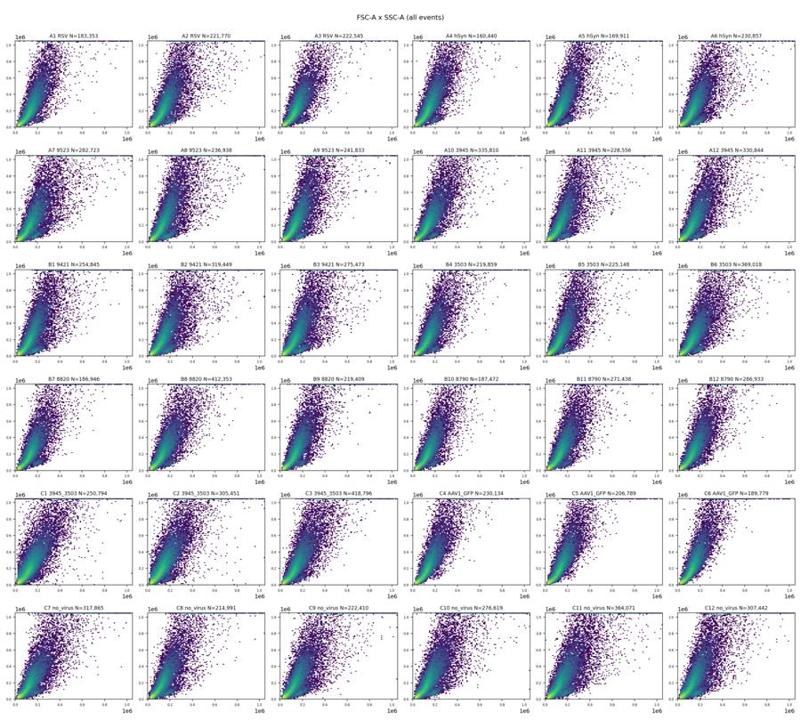
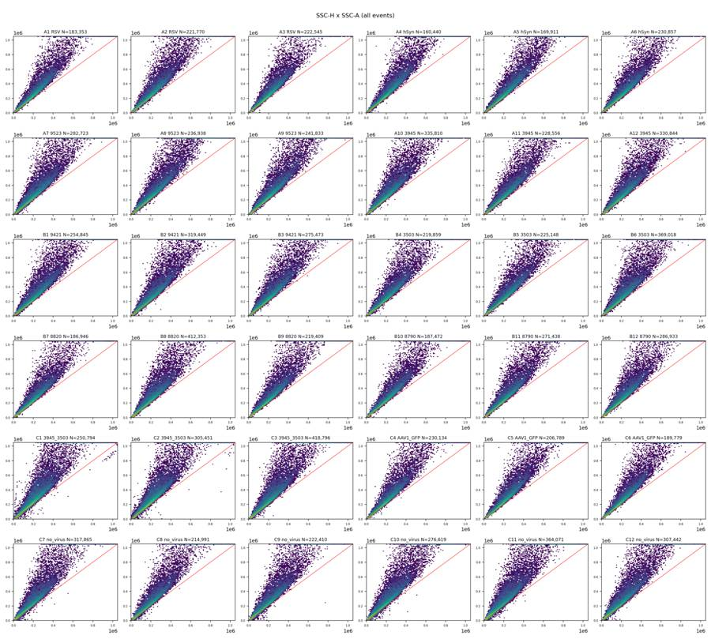
tool call · exec
text(await tools.write_stdin({session_id:86834,chars:"","yield_time_ms":1000,"max_output_tokens":500}));
const r=await tools.view_image({path:"/task/outputs/initial_fluorescence.png"});image(r.image_url);
tool output
Script completed Wall time 0.0 seconds Output:
{"chunk_id":"6e7733","wall_time_seconds":0.000002429,"exit_code":0,"original_token_count":0,"output":""}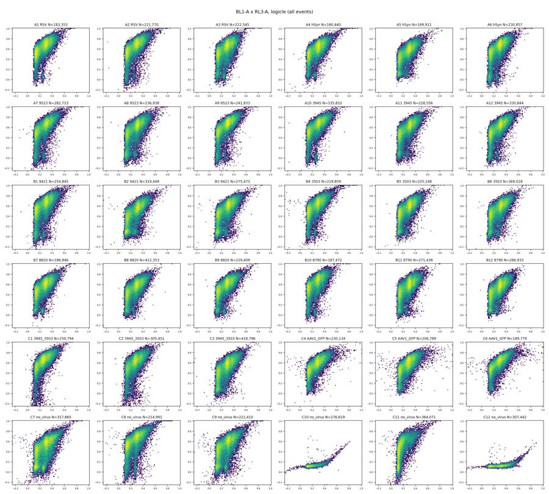
tool call · exec
text(await tools.exec_command({cmd:"cat > /task/outputs/build_gates.py <<'PY'\n\"\"\"One shared raw-data strategy. Fluorescence coordinates use a logicle display.\"\"\"\nfrom pathlib import Path\nimport flowkit as fk\nimport numpy as np\nOUT=Path(__file__).resolve().parent\nCELLS=[(50000,15000),(180000,15000),(600000,350000),(700000,1040000),(160000,1040000),(50000,150000)]\nSINGLE=[(10000,8000),(1040000,832000),(1040000,1040000),(693333.333333,1040000),(10000,15000)]\nCASPASE=1000.0\nLIVE_MAX=1000.0\nDEAD_MIN=2000.0\nTRANSFORM=fk.transforms.LogicleTransform(param_t=1048576,param_w=.5,param_m=4.5,param_a=0)\ndef f(v): return float(TRANSFORM.apply(np.array([v],dtype=float))[0])\ndef dim(ch,lo=None,hi=None):\n return fk.Dimension(ch,compensation_ref='uncompensated',transformation_ref='fluorescence_logicle' if ch in ('BL1-A','RL3-A') else None,range_min=lo,range_max=hi)\ndef build():\n g=fk.GatingStrategy();g.add_transform('fluorescence_logicle',TRANSFORM)\n g.add_gate(fk.gates.PolygonGate('Cells',[dim('FSC-A'),dim('SSC-A')],CELLS),('root',))\n g.add_gate(fk.gates.PolygonGate('Single_Cells',[dim('SSC-H'),dim('SSC-A')],SINGLE),('root','Cells'))\n g.add_gate(fk.gates.RectangleGate('Live',[dim('BL1-A'),dim('RL3-A',hi=f(LIVE_MAX))]),('root','Cells','Single_Cells'))\n g.add_gate(fk.gates.RectangleGate('Caspase_pos',[dim('BL1-A',lo=f(CASPASE)),dim('RL3-A',hi=f(LIVE_MAX))]),('root','Cells','Single_Cells','Live'))\n g.add_gate(fk.gates.PolygonGate('Late_apoptosis',[dim('BL1-A'),dim('RL3-A')],[(f(CASPASE),f(DEAD_MIN)),(1.1,f(DEAD_MIN)),(1.1,1.1),(f(CASPASE),1.1)]),('root','Cells','Single_Cells'))\n return g\nif __name__=='__main__':\n g=build()\n with open(OUT/'gates.xml','wb') as h: fk.export_gatingml(g,h)\n g2=fk.parse_gating_xml(str(OUT/'gates.xml'))\n assert len(g2.get_gate_ids())==5\n print('Saved and reloaded',g2.get_gate_ids())\nPY\npython /task/outputs/build_gates.py\ncat > /task/outputs/detail.py <<'PY'\nfrom pathlib import Path\nimport numpy as np,pandas as pd,flowkit as fk\nimport matplotlib\nmatplotlib.use('Agg')\nimport matplotlib.pyplot as plt\nfrom matplotlib.colors import LogNorm\nfrom build_gates import build,TRANSFORM,f,CELLS,SINGLE,CASPASE,LIVE_MAX,DEAD_MIN\nOUT=Path('/task/outputs');g=build();cache=np.load(OUT/'plot_samples.npz')\nfig,axes=plt.subplots(3,3,figsize=(17,16))\nfor row,w in enumerate(['C10','C11','C12']):\n s=fk.Sample('/task/inputs/raw/Caspase_KO_RNAswap-rep2_caspase_Group_'+w+'.fcs');x=s.get_events(source='raw');res=g.gate_sample(s)\n ax=axes[row,0];ax.hist2d(x[:,1],x[:,2],bins=160,range=[[0,400000],[0,600000]],norm=LogNorm(),cmap='viridis');v=np.array(CELLS+CELLS[:1]);ax.plot(*v.T,color='red');ax.set(xlim=(0,400000),ylim=(0,600000),xlabel='FSC-A',ylabel='SSC-A',title=w+' Cells (draft)')\n m=res.get_gate_membership('Cells');ax=axes[row,1];ax.hist2d(x[m,6],x[m,2],bins=160,range=[[0,600000],[0,750000]],norm=LogNorm(),cmap='viridis');v=np.array(SINGLE+SINGLE[:1]);ax.plot(*v.T,color='red');ax.set(xlim=(0,600000),ylim=(0,750000),xlabel='SSC-H',ylabel='SSC-A',title=w+' Single_Cells (draft)')\n m=res.get_gate_membership('Single_Cells');z=TRANSFORM.apply(x[m][:,[3,4]])\n ax=axes[row,2];ax.hist2d(z[:,0],z[:,1],bins=200,range=[[-.25,1.01],[-.25,1.01]],norm=LogNorm(),cmap='viridis');ax.axvline(f(CASPASE),color='red');ax.axhline(f(LIVE_MAX),color='red');ax.axhline(f(DEAD_MIN),color='orange');ax.set(xlabel='BL1-A logicle',ylabel='RL3-A logicle',title=w+' Single_Cells fluorescence')\n ticks=[-1000,0,1000,10000,100000,1000000];ax.set_xticks([f(v) for v in ticks],['-1k','0','1k','10k','100k','1M']);ax.set_yticks([f(v) for v in ticks],['-1k','0','1k','10k','100k','1M'])\n print(w,res.report[['gate_name','count','relative_percent']].to_string(index=False))\n print('singlet fluor quantiles',np.quantile(x[m][:,[3,4]],[0,.01,.1,.5,.9,.95,.99,.999,1],axis=0))\nfig.tight_layout();fig.savefig(OUT/'control_details_draft.png',dpi=150);plt.close(fig)\nfig,axes=plt.subplots(2,3,figsize=(18,9))\nfor w in ['C10','C11','C12','C7','C8','C9']:\n s=fk.Sample('/task/inputs/raw/Caspase_KO_RNAswap-rep2_caspase_Group_'+w+'.fcs');x=s.get_events(source='raw');res=g.gate_sample(s);m=res.get_gate_membership('Single_Cells');c=res.get_gate_membership('Cells')\n for j,idx in enumerate([3,4]):\n axes[0,j].hist(TRANSFORM.apply(x[m,idx]),bins=np.linspace(-.3,1,180),density=True,histtype='step',label=w)\n axes[0,2].hist(x[c,2]/x[c,6],bins=np.linspace(.5,3,170),density=True,histtype='step',label=w)\n axes[1,0].hist(x[:,1],bins=np.linspace(0,300000,180),density=True,histtype='step',label=w)\n axes[1,1].hist(x[:,2],bins=np.linspace(0,300000,180),density=True,histtype='step',label=w)\n axes[1,2].hist(TRANSFORM.apply(x[m & (x[:,4]<LIVE_MAX),3]),bins=np.linspace(-.3,1,180),density=True,histtype='step',label=w)\nfor a,title in zip(axes.flat,['BL1-A / singlets','RL3-A / singlets','SSC-A / SSC-H / Cells','FSC-A all','SSC-A all','BL1-A / Live']):a.set_title(title);a.legend(fontsize=8)\nfig.tight_layout();fig.savefig(OUT/'control_histograms_draft.png',dpi=150)\nPY\npython /task/outputs/detail.py","yield_time_ms":1000,"max_output_tokens":3000}));
tool output
Script completed
Wall time 1.2 seconds
Output:
{"chunk_id":"7a02a1","wall_time_seconds":1.000735049,"session_id":19974,"original_token_count":60,"output":"Saved and reloaded [('Cells', ('root',)), ('Single_Cells', ('root', 'Cells')), ('Live', ('root', 'Cells', 'Single_Cells')), ('Caspase_pos', ('root', 'Cells', 'Single_Cells', 'Live')), ('Late_apoptosis', ('root', 'Cells', 'Single_Cells'))]\n"}tool call · exec
const rs=await Promise.allSettled([tools.view_image({path:"/task/outputs/initial_time_rate.png"}),tools.view_image({path:"/task/outputs/initial_time_fsc.png"})]);for(const r of rs)if(r.status==="fulfilled")image(r.value.image_url);else text(r);
tool output
Script completed Wall time 0.1 seconds Output:
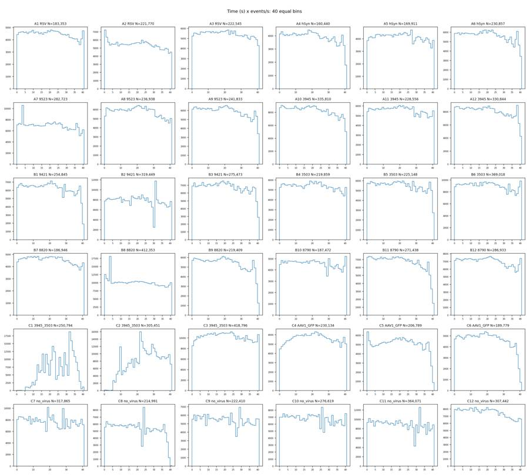
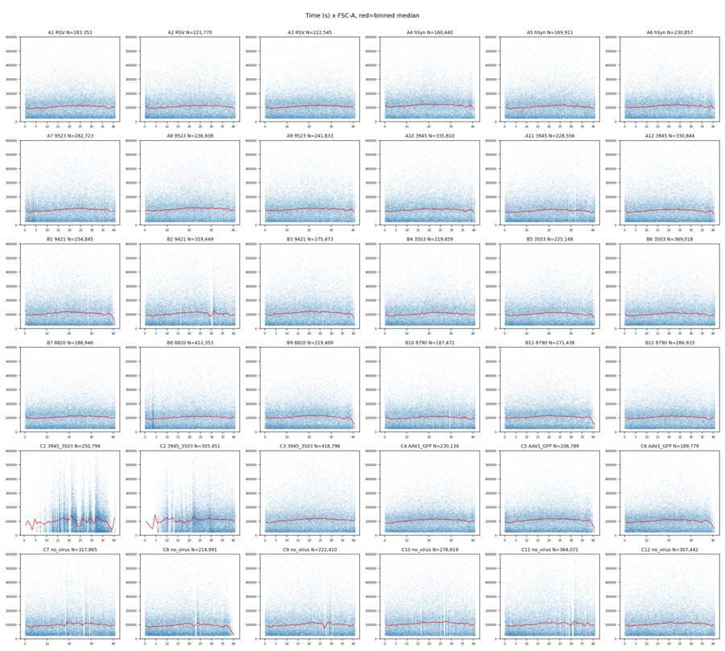
16
agent
A draft `gates.xml` is saved and reloads successfully. C1 and C2 show marked flow interruptions; C8 shows a terminal flow collapse. I’m checking the other end-of-run declines before finalizing flags. C4–C6 will also need an assay-use flag because GFP and CellEvent share BL1-A, so their caspase counts cannot be interpreted specifically.
tool call · exec
text(await tools.write_stdin({session_id:19974,chars:"","yield_time_ms":1000,"max_output_tokens":4000}));
const rs=await Promise.allSettled([tools.view_image({path:"/task/outputs/control_details_draft.png"}),tools.view_image({path:"/task/outputs/control_histograms_draft.png"})]);for(const r of rs)if(r.status==="fulfilled")image(r.value.image_url);else text(r);
tool output
Script completed Wall time 0.1 seconds Output:
{"chunk_id":"af0798","wall_time_seconds":0.000004321,"exit_code":0,"original_token_count":416,"output":"C10 gate_name count relative_percent\n Cells 198227 71.660660\n Single_Cells 162148 81.799149\nLate_apoptosis 3 0.001850\n Live 162101 99.971014\n Caspase_pos 11307 6.975281\nsinglet fluor quantiles [[-3.130000e+03 -4.050000e+02]\n [-2.900000e+01 -9.400000e+01]\n [ 4.300000e+01 -4.100000e+01]\n [ 2.100000e+02 2.600000e+01]\n [ 7.710000e+02 1.020000e+02]\n [ 1.190650e+03 1.290000e+02]\n [ 2.001000e+03 1.890000e+02]\n [ 3.215853e+03 3.070000e+02]\n [ 8.768000e+03 1.195880e+05]]\nC11 gate_name count relative_percent\n Cells 250659 68.848933\n Single_Cells 196243 78.290825\nLate_apoptosis 12169 6.200986\n Live 38279 19.505919\n Caspase_pos 265 0.692286\nsinglet fluor quantiles [[-4.70400000e+03 -5.01760000e+04]\n [-3.70000000e+01 -6.40000000e+02]\n [ 3.10000000e+01 1.06000000e+02]\n [ 1.73000000e+02 6.92100000e+03]\n [ 7.11000000e+02 3.21458000e+04]\n [ 1.16500000e+03 4.58688000e+04]\n [ 1.99758000e+03 8.15595800e+04]\n [ 3.21075800e+03 1.44959522e+05]\n [ 7.06200000e+03 3.04294000e+05]]\nC12 gate_name count relative_percent\n Cells 218183 70.967207\n Single_Cells 178317 81.728182\nLate_apoptosis 21 0.011777\n Live 178239 99.956258\n Caspase_pos 86099 48.305365\nsinglet fluor quantiles [[-4.38600e+03 -4.88000e+02]\n [ 5.00000e+00 -9.50000e+01]\n [ 1.58000e+02 -4.20000e+01]\n [ 9.72000e+02 2.50000e+01]\n [ 2.28400e+03 9.90000e+01]\n [ 2.88200e+03 1.25000e+02]\n [ 4.55800e+03 1.85000e+02]\n [ 7.51100e+03 3.17684e+02]\n [ 6.82900e+04 5.14060e+04]]\n"}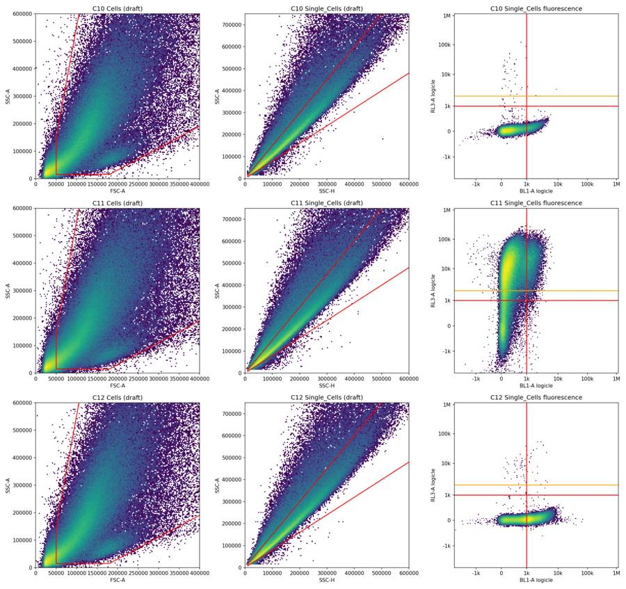
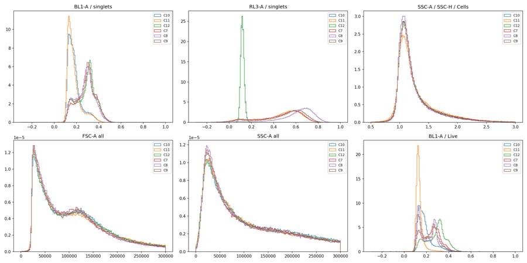
tool call · exec
text(await tools.exec_command({cmd:"python - <<'PY'\nimport sys;sys.path.insert(0,'/task/outputs')\nfrom build_gates import f\nfor v in [0,100,200,300,400,500,600,700,800,1000,1500,2000,3000,5000,10000]: print(v,round(f(v),4))\nPY","max_output_tokens":500}));
tool output
Script completed
Wall time 1.2 seconds
Output:
{"chunk_id":"3b1a9a","wall_time_seconds":1.00767502,"exit_code":0,"original_token_count":42,"output":"0 0.1111\n100 0.1389\n200 0.1657\n300 0.1906\n400 0.2132\n500 0.2333\n600 0.2511\n700 0.267\n800 0.2811\n1000 0.3053\n1500 0.3498\n2000 0.381\n3000 0.4243\n5000 0.4773\n10000 0.5474\n"}tool call · exec
text(await tools.exec_command({cmd:"cat > /task/outputs/refine_controls.py <<'PY'\nfrom pathlib import Path\nimport numpy as np,pandas as pd,flowkit as fk\nimport matplotlib\nmatplotlib.use('Agg')\nimport matplotlib.pyplot as plt\nfrom matplotlib.colors import LogNorm\nfrom scipy.ndimage import gaussian_filter1d\nfrom scipy.signal import find_peaks\nfrom build_gates import build,f,TRANSFORM\nO=Path('/task/outputs');g=build()\nfig,ax=plt.subplots(2,3,figsize=(18,10))\nfor row,w in enumerate(['C12','C11']):\n s=fk.Sample('/task/inputs/raw/Caspase_KO_RNAswap-rep2_caspase_Group_'+w+'.fcs');x=s.get_events(source='raw');r=g.gate_sample(s);m=r.get_gate_membership('Single_Cells')\n for j in range(2):\n idx=[3,4][j];z=TRANSFORM.apply(x[m,idx]);h,e=np.histogram(z,bins=np.linspace(-.15,.8,400),density=True);cent=(e[1:]+e[:-1])/2;h=gaussian_filter1d(h,2)\n ax[row,j].plot(cent,h);ax[row,j].set(title=f'{w} '+['BL1-A','RL3-A'][j],xlim=(-.1,.8))\n ticks=[-500,0,200,500,1000,2000,5000,20000,100000];ax[row,j].set_xticks([f(v) for v in ticks],ticks,rotation=45)\n print(w,idx,'peaks',[(round(cent[p],4),round(float(TRANSFORM.inverse(np.array([cent[p]]))[0]),1),round(h[p],2)) for p in find_peaks(h,prominence=.05)[0]])\n print(w,idx,'troughs',[(round(cent[p],4),round(float(TRANSFORM.inverse(np.array([cent[p]]))[0]),1),round(h[p],2)) for p in find_peaks(-h,prominence=.05)[0]])\n z=TRANSFORM.apply(x[:,[1,2]]);ax[row,2].hist2d(z[:,0],z[:,1],bins=180,range=[[.35,1.01],[.35,1.01]],norm=LogNorm(),cmap='viridis');ax[row,2].set(title=f'{w} FSC-A x SSC-A logicle')\n ticks=[10000,25000,50000,100000,250000,500000,1000000];ax[row,2].set_xticks([f(v) for v in ticks],ticks,rotation=45);ax[row,2].set_yticks([f(v) for v in ticks],ticks)\n print(w,'threshold panels')\n for b in [400,500,600,750,1000,1500,2000]:\n print('BL1',b,'all singles %',round(100*np.mean(x[m,3]>=b),2),'Live500 %',round(100*np.mean(x[m & (x[:,4]<500),3]>=b),2),'bright2000 %',round(100*np.mean(x[m & (x[:,4]>=2000),3]>=b),2))\nfig.tight_layout();fig.savefig(O/'refine_controls.png',dpi=150)\nPY\npython /task/outputs/refine_controls.py","yield_time_ms":1000,"max_output_tokens":2000}));
tool output
Script completed
Wall time 1.2 seconds
Output:
{"chunk_id":"1f67f1","wall_time_seconds":1.001261106,"session_id":14305,"original_token_count":0,"output":""}tool call · exec
text(await tools.exec_command({cmd:"cat > /task/outputs/time_qc.py <<'PY'\nfrom pathlib import Path\nimport json, numpy as np,pandas as pd,flowkit as fk\nimport matplotlib\nmatplotlib.use('Agg')\nimport matplotlib.pyplot as plt\nO=Path('/task/outputs');layout=pd.read_csv('/task/inputs/plate_layout.csv');rows=[];bm=[]\nfor r in layout.itertuples():\n s=fk.Sample('/task/inputs/raw/'+r.file);x=s.get_events(source='raw');t=x[:,0];start=t.min();end=t.max();base=(t>=10)&(t<30);edges=np.arange(0,42,.5);ii=np.searchsorted(edges,t,side='right')-1\n out=dict(well=r.well,n=len(x),end=end,baseline_rate=base.sum()/20,baseline_fsc=np.median(x[base,1]),baseline_ssc=np.median(x[base,2]),baseline_debris_pct=100*np.mean(x[base,1]<50000),first5_rate=np.sum(t<5)/5,max_gap=np.max(np.diff(t)))\n for last in [1,2,3,5]:\n m=t>=end-last\n out[f'last{last}_rate']=m.sum()/last;out[f'last{last}_rate_ratio']=out[f'last{last}_rate']/out['baseline_rate'];out[f'last{last}_fsc']=np.median(x[m,1]);out[f'last{last}_fsc_ratio']=out[f'last{last}_fsc']/out['baseline_fsc'];out[f'last{last}_debris_pct']=100*np.mean(x[m,1]<50000)\n for i in range(len(edges)-1):\n m=ii==i\n if not m.any(): continue\n bm.append(dict(well=r.well,t=edges[i]+.25,n=int(m.sum()),rate=m.sum()/.5,fsc=np.median(x[m,1]),ssc=np.median(x[m,2]),bl1=np.median(x[m,3]),rl3=np.median(x[m,4]),debris_pct=100*np.mean(x[m,1]<50000)))\n rows.append(out)\n pd.DataFrame(rows).to_csv(O/'time_qc_summary.csv',index=False)\n print(r.well,'late2 rate',round(out['last2_rate_ratio'],2),'FSC',round(out['last2_fsc_ratio'],2),flush=True)\npd.DataFrame(bm).to_csv(O/'time_qc_bins.csv',index=False)\np=pd.DataFrame(bm)\nfig,axes=plt.subplots(6,6,figsize=(20,17))\nfor ax,r in zip(axes.flat,layout.itertuples()):\n b=p[p.well==r.well];v=next(z for z in rows if z['well']==r.well)\n ax.plot(b.t,b.rate/v['baseline_rate'],label='event rate',lw=1)\n ax.plot(b.t,b.fsc/v['baseline_fsc'],label='FSC median',lw=1,color='orange')\n ax.axhline(.5,color='black',ls=':',lw=.5);ax.set(xlim=(0,42),ylim=(0,2.2),title=r.well);ax.tick_params(labelsize=7)\naxes[0,0].legend(fontsize=6);fig.suptitle('Time QC: event rate and FSC-A median relative to 10–30 s baseline (0.5 s bins)');fig.tight_layout(rect=(0,0,1,.98));fig.savefig(O/'time_qc_normalized.png',dpi=150)\nPY\npython /task/outputs/time_qc.py","yield_time_ms":1000,"max_output_tokens":1000}));
text(await tools.write_stdin({session_id:14305,chars:"","yield_time_ms":1000,"max_output_tokens":2500}));
tool output
Script completed
Wall time 1.2 seconds
Output:
{"chunk_id":"5d3f79","wall_time_seconds":1.001410815,"session_id":86241,"original_token_count":0,"output":""}
{"chunk_id":"d73c73","wall_time_seconds":0.000002351,"exit_code":0,"original_token_count":303,"output":"C12 3 peaks [(0.1512, 145.0, 2.6), (0.3226, 1171.2, 6.56)]\nC12 3 troughs [(0.1869, 284.4, 2.05)]\nC12 4 peaks [(0.1179, 24.1, 25.18)]\nC12 4 troughs []\nC12 threshold panels\nBL1 400 all singles % 77.16 Live500 % 77.16 bright2000 % 83.58\nBL1 500 all singles % 72.69 Live500 % 72.69 bright2000 % 73.13\nBL1 600 all singles % 68.43 Live500 % 68.43 bright2000 % 70.15\nBL1 750 all singles % 61.85 Live500 % 61.86 bright2000 % 49.25\nBL1 1000 all singles % 48.3 Live500 % 48.31 bright2000 % 31.34\nBL1 1500 all singles % 22.44 Live500 % 22.44 bright2000 % 17.91\nBL1 2000 all singles % 13.58 Live500 % 13.58 bright2000 % 13.43\nC11 3 peaks [(0.1345, 84.0, 11.23)]\nC11 3 troughs []\nC11 4 peaks [(0.0845, -95.5, 0.7), (0.5679, 12280.6, 2.94)]\nC11 4 troughs [(0.1631, 189.9, 0.51)]\nC11 threshold panels\nBL1 400 all singles % 19.42 Live500 % 2.4 bright2000 % 24.58\nBL1 500 all singles % 14.83 Live500 % 1.7 bright2000 % 18.82\nBL1 600 all singles % 12.03 Live500 % 1.25 bright2000 % 15.3\nBL1 750 all singles % 9.44 Live500 % 0.8 bright2000 % 12.08\nBL1 1000 all singles % 6.54 Live500 % 0.4 bright2000 % 8.44\nBL1 1500 all singles % 2.71 Live500 % 0.1 bright2000 % 3.58\nBL1 2000 all singles % 1.0 Live500 % 0.03 bright2000 % 1.33\n"}tool call · exec
image((await tools.view_image({path:"/task/outputs/refine_controls.png"})).image_url);
text(await tools.write_stdin({session_id:86241,chars:"","yield_time_ms":1000,"max_output_tokens":2000}));
tool output
Script completed Wall time 0.0 seconds Output:
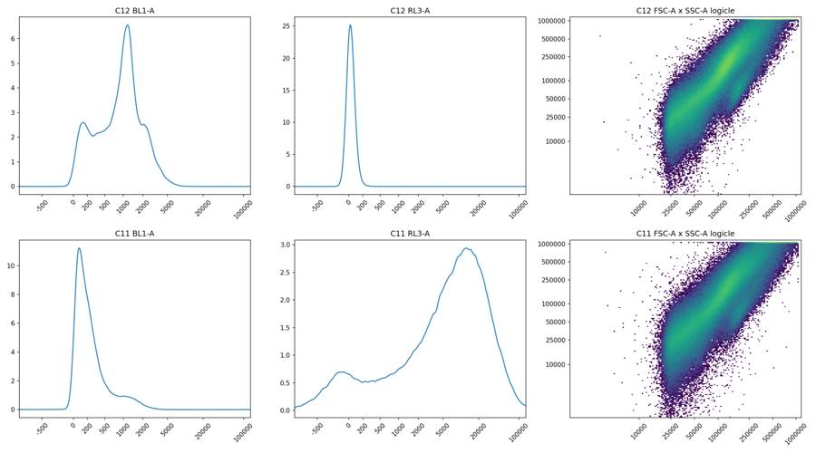
{"chunk_id":"b898a1","wall_time_seconds":0.00000305,"exit_code":0,"original_token_count":252,"output":"A1 late2 rate 0.96 FSC 0.93\nA2 late2 rate 0.79 FSC 0.89\nA3 late2 rate 0.82 FSC 0.9\nA4 late2 rate 0.62 FSC 0.86\nA5 late2 rate 0.83 FSC 0.87\nA6 late2 rate 0.68 FSC 0.91\nA7 late2 rate 0.82 FSC 0.87\nA8 late2 rate 0.78 FSC 0.87\nA9 late2 rate 0.7 FSC 0.9\nA10 late2 rate 0.7 FSC 0.88\nA11 late2 rate 0.9 FSC 0.88\nA12 late2 rate 0.63 FSC 0.84\nB1 late2 rate 0.48 FSC 0.68\nB2 late2 rate 0.91 FSC 0.89\nB3 late2 rate 0.54 FSC 0.75\nB4 late2 rate 0.88 FSC 0.9\nB5 late2 rate 0.68 FSC 0.83\nB6 late2 rate 1.01 FSC 0.92\nB7 late2 rate 0.88 FSC 0.93\nB8 late2 rate 0.96 FSC 0.97\nB9 late2 rate 0.38 FSC 0.65\nB10 late2 rate 1.03 FSC 0.89\nB11 late2 rate 0.34 FSC 0.61\nB12 late2 rate 0.96 FSC 0.92\nC1 late2 rate 0.11 FSC 0.79\nC2 late2 rate 0.93 FSC 0.97\nC3 late2 rate 0.93 FSC 0.9\nC4 late2 rate 0.9 FSC 0.91\nC5 late2 rate 0.32 FSC 0.63\nC6 late2 rate 0.27 FSC 0.62\nC7 late2 rate 0.99 FSC 0.9\nC8 late2 rate 0.11 FSC 0.46\nC9 late2 rate 1.0 FSC 0.92\nC10 late2 rate 0.97 FSC 0.89\nC11 late2 rate 0.94 FSC 0.9\nC12 late2 rate 0.86 FSC 0.87\n"}21
agent
The controls show substantial overlap between BL1-A background and CellEvent signal, so the caspase threshold needs to be conservative and its limitation documented. The time analysis also separates ordinary tapering from terminal failures: several wells lose both event rate and forward scatter near the end. I’m quantifying those changes before assigning the final flags.
tool call · exec
image((await tools.view_image({path:"/task/outputs/time_qc_normalized.png"})).image_url);
text(await tools.exec_command({cmd:"python - <<'PY'\nimport pandas as pd\np=pd.read_csv('/task/outputs/time_qc_summary.csv');print(p[['well','baseline_rate','baseline_fsc','last1_rate_ratio','last1_fsc_ratio','last2_rate_ratio','last2_fsc_ratio','last3_rate_ratio','last3_fsc_ratio','last1_debris_pct','baseline_debris_pct']].round(3).to_string(index=False))\nPY","max_output_tokens":3000}));
tool output
Script completed Wall time 0.4 seconds Output:
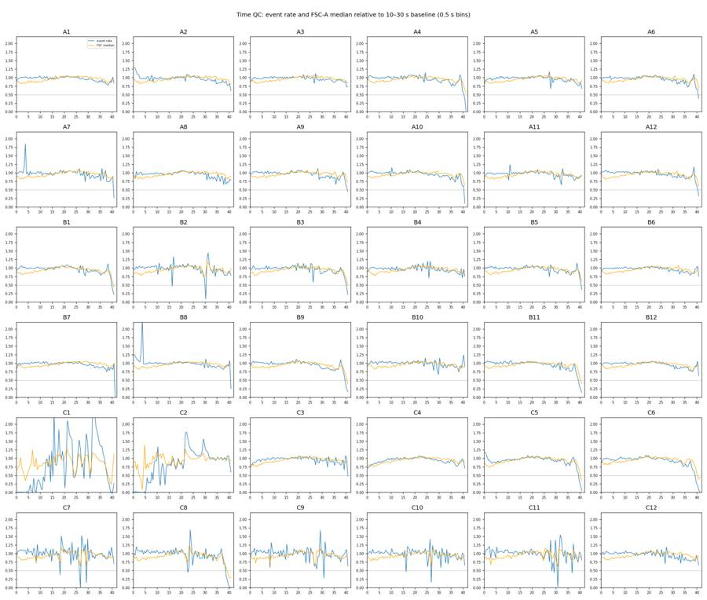
{"chunk_id":"1bc633","wall_time_seconds":0.168374408,"exit_code":0,"original_token_count":1647,"output":"well baseline_rate baseline_fsc last1_rate_ratio last1_fsc_ratio last2_rate_ratio last2_fsc_ratio last3_rate_ratio last3_fsc_ratio last1_debris_pct baseline_debris_pct\n A1 4601.05 109978.0 1.032 0.955 0.962 0.934 0.904 0.908 22.926 23.846\n A2 5552.25 110738.0 0.808 0.834 0.793 0.889 0.824 0.905 27.540 23.338\n A3 5586.50 111416.0 0.765 0.863 0.823 0.897 0.849 0.915 25.246 22.242\n A4 4078.25 120788.0 0.436 0.714 0.617 0.856 0.749 0.889 31.795 20.445\n A5 4286.75 110851.0 0.913 0.885 0.834 0.870 0.837 0.897 27.071 22.348\n A6 5882.30 114718.5 0.579 0.811 0.684 0.912 0.803 0.928 28.303 21.464\n A7 7087.95 112176.0 0.882 0.887 0.825 0.871 0.803 0.876 26.136 22.881\n A8 6101.70 118108.5 0.830 0.894 0.781 0.869 0.789 0.888 24.477 21.136\n A9 6157.60 115560.5 0.554 0.772 0.699 0.902 0.793 0.919 29.326 20.635\n A10 8607.05 111888.0 0.587 0.767 0.703 0.878 0.768 0.916 30.145 23.109\n A11 5768.50 106093.0 0.943 0.920 0.904 0.880 0.888 0.877 26.773 24.650\n A12 8362.00 108091.0 0.505 0.718 0.626 0.837 0.776 0.883 34.462 24.101\n B1 6514.10 113350.5 0.291 0.512 0.480 0.685 0.653 0.817 43.776 23.171\n B2 7943.55 109481.0 0.962 0.927 0.909 0.892 0.867 0.883 26.158 24.422\n B3 7034.30 115922.5 0.407 0.617 0.543 0.752 0.689 0.839 37.282 21.930\n B4 5528.40 107908.0 0.939 0.883 0.879 0.896 0.860 0.896 28.073 24.933\n B5 5681.15 108854.0 0.478 0.679 0.682 0.827 0.797 0.877 34.400 24.631\n B6 9275.45 106638.0 1.056 0.954 1.010 0.923 0.950 0.895 26.138 24.791\n B7 4710.45 108896.0 0.904 0.963 0.881 0.931 0.867 0.923 26.098 24.705\n B8 10058.55 107301.0 0.991 0.982 0.957 0.966 0.929 0.941 24.388 24.101\n B9 5694.75 112132.0 0.218 0.479 0.384 0.647 0.546 0.795 47.215 23.566\n B10 4625.80 106069.0 1.135 0.891 1.034 0.892 0.961 0.879 28.090 25.101\n B11 7031.75 111441.0 0.210 0.461 0.335 0.615 0.465 0.780 48.376 22.961\n B12 7270.55 109236.0 1.012 0.949 0.962 0.917 0.904 0.885 24.969 23.310\n C1 7758.15 111573.0 0.152 1.109 0.109 0.790 0.197 0.583 19.286 19.650\n C2 9085.30 111659.0 0.791 0.949 0.932 0.968 0.953 0.975 24.336 19.534\n C3 10687.50 114836.0 0.994 0.911 0.934 0.904 0.911 0.915 26.226 22.059\n C4 5970.90 112175.0 0.842 0.918 0.899 0.912 0.892 0.890 24.314 22.098\n C5 5423.65 115214.0 0.156 0.438 0.321 0.627 0.472 0.796 49.526 21.822\n C6 5017.30 107888.0 0.152 0.441 0.268 0.617 0.394 0.753 53.018 22.535\n C7 7757.15 104504.0 0.922 0.905 0.986 0.902 0.976 0.894 28.587 24.767\n C8 5546.60 101513.0 0.011 0.300 0.110 0.465 0.275 0.606 84.746
… [730 more characters not shown]tool call · exec
text(await tools.exec_command({cmd:"python - <<'PY'\np='/task/outputs/build_gates.py'\ns=open(p).read().replace('CELLS=[(50000,15000)','CELLS=[(60000,15000)').replace('(50000,150000)]','(60000,150000)]').replace('CASPASE=1000.0','CASPASE=2000.0').replace('LIVE_MAX=1000.0','LIVE_MAX=300.0')\nopen(p,'w').write(s)\nPY\npython /task/outputs/build_gates.py\ncat > /task/outputs/analyze_plate.py <<'PY'\n\"\"\"Gate all complete files with the exported strategy; no event trimming or correction.\"\"\"\nfrom pathlib import Path\nimport json, numpy as np,pandas as pd,flowkit as fk\nfrom build_gates import build\nOUT=Path(__file__).resolve().parent\nLAYOUT=pd.read_csv('/task/inputs/plate_layout.csv',keep_default_na=False)\nPOPS=['Cells','Single_Cells','Live','Caspase_pos','Late_apoptosis']\nPARENTS=['All_events','Cells','Single_Cells','Live','Single_Cells']\n\ndef run():\n original=build()\n with open(OUT/'gates.xml','wb') as fh: fk.export_gatingml(original,fh)\n gs=fk.parse_gating_xml(str(OUT/'gates.xml'))\n assert len(gs.get_gate_ids())==5\n counts=[];qc=[];time=[]\n for r in LAYOUT.itertuples():\n sample=fk.Sample('/task/inputs/raw/'+r.file)\n assert sample.metadata['wellid']==r.well\n assert list(sample.channels.pnn)==['Time','FSC-A','SSC-A','BL1-A','RL3-A','FSC-H','SSC-H','FSC-W','SSC-W']\n data=sample.get_events(source='raw');assert np.isfinite(data).all()\n result=gs.gate_sample(sample);check=original.gate_sample(sample)\n masks={p:result.get_gate_membership(p) for p in POPS}\n ns={'All_events':sample.event_count}\n for pop,parent in zip(POPS,PARENTS):\n n=int(result.get_gate_count(pop));ns[pop]=n\n assert np.array_equal(masks[pop],check.get_gate_membership(pop)),(r.well,pop,'XML round trip changed membership')\n if parent!='All_events':assert not np.any(masks[pop]&~masks[parent])\n assert n<=ns[parent]\n counts.append(dict(file=r.file,well=r.well,population=pop,count=n,parent_population=parent,pct_of_parent=100*n/ns[parent] if ns[parent] else 0.0))\n assert not np.any(masks['Live']&masks['Late_apoptosis'])\n row=dict(file=r.file,well=r.well,construct=r.construct,control_type=r.control_type,All_events=sample.event_count,**{p:ns[p] for p in POPS})\n for pop in POPS:\n m=masks[pop]\n for idx,c in [(3,'BL1'),(4,'RL3')]:\n row[f'{pop}_{c}_median']=float(np.median(data[m,idx])) if m.any() else 0\n row[f'{pop}_{c}_negative_n']=int(np.sum(data[m,idx]<0))\n row[f'{pop}_{c}_saturated_n']=int(np.sum(data[m,idx]>=1048575))\n if pop=='Single_Cells':\n for q in [.95,.99,.999]:row[f'{c}_q{q:g}']=float(np.quantile(data[m,idx],q)) if m.any() else 0\n row['single_BL1_ge2000_pct']=float(100*np.mean(data[masks['Single_Cells'],3]>=2000))\n row['single_BL1_ge10000_pct']=float(100*np.mean(data[masks['Single_Cells'],3]>=10000))\n row['single_RL3_intermediate_n']=int(np.sum(masks['Single_Cells']&(data[:,4]>=300)&(data[:,4]<2000)))\n row['single_RL3_bright_n']=int(np.sum(masks['Single_Cells']&(data[:,4]>=2000)))\n row['single_nonreportable_n']=int(np.sum(masks['Single_Cells']&~masks['Live']&~masks['Late_apoptosis']))\n qc.append(row)\n t=data[:,0]\n for label,mask in [('baseline_10to30s',(t>=10)&(t<30)),('last_2s',t>=t.max()-2),('first_5s',t<t.min()+5)]:\n tr=dict(well=r.well,interval=label,n=int(mask.sum()))\n for p in POPS:tr[p]=int(np.sum(masks[p]&mask))\n time.append(tr)\n print(r.well,' '.join(f'{p}={ns[p]}' for p in POPS),flush=True)\n pd.DataFrame(counts).to_csv(OUT/'counts.csv',index=False)\n pd.DataFrame(qc).to_csv(OUT/'gated_qc_metrics.csv',index=False)\n pd.DataFrame(time).to_csv(OUT/'time_gated_counts.csv',index=False)\n c=pd.DataFrame(counts)\n assert c.shape==(180,6) and len(c.file.unique())==36\n assert c.count().notna().all() and (c['count']>=0).all() and c.pct_of_parent.between(0,100).all()\n assert all(list(d.population)==POPS for _,d in c.groupby('well',sort=False))\n print('PASS: 180 counts; identical event memberships before/after XML export for 36 files; correct ancestry; finite raw events; channel and well metadata match.')\n (OUT/'validation.txt').write_text('FlowKit 1.2.3\\nPASS: GatingML export and parse, five gates, 36 complete files, 180 integer counts.\\nPASS: Exported and in-memory gate membership identical for all 180 populations.\\nPASS: Parent membership, population order, exact input filenames, well/channel metadata and percentage ranges.\\nNo compensation, autofluorescence correction, per-well gates or time trimming.\\n')\nif __name__=='__main__':run()\nPY\npython /task/outputs/analyze_plate.py","yield_time_ms":1000,"max_output_tokens":1500}));
tool output
Script completed
Wall time 1.2 seconds
Output:
{"chunk_id":"980638","wall_time_seconds":1.00104305,"session_id":36039,"original_token_count":60,"output":"Saved and reloaded [('Cells', ('root',)), ('Single_Cells', ('root', 'Cells')), ('Live', ('root', 'Cells', 'Single_Cells')), ('Caspase_pos', ('root', 'Cells', 'Single_Cells', 'Live')), ('Late_apoptosis', ('root', 'Cells', 'Single_Cells'))]\n"}tool call · exec
text(await tools.write_stdin({session_id:36039,chars:"","yield_time_ms":1000,"max_output_tokens":3000}));
text(await tools.exec_command({cmd:"python - <<'PY'\nimport pandas as pd\np=pd.read_csv('/task/outputs/counts.csv')\nprint(p.pivot(index='well',columns='population',values='pct_of_parent').round(2).to_string())\nPY","max_output_tokens":2000}));
tool output
Script completed
Wall time 5.3 seconds
Output:
{"chunk_id":"d3dad6","wall_time_seconds":5.000511376,"session_id":36039,"original_token_count":538,"output":"A1 Cells=123590 Single_Cells=107507 Live=1445 Caspase_pos=6 Late_apoptosis=9372\nA2 Cells=148539 Single_Cells=124612 Live=5400 Caspase_pos=42 Late_apoptosis=12059\nA3 Cells=155466 Single_Cells=135346 Live=4376 Caspase_pos=12 Late_apoptosis=14436\nA4 Cells=113416 Single_Cells=98707 Live=2985 Caspase_pos=12 Late_apoptosis=9052\nA5 Cells=116480 Single_Cells=102006 Live=4946 Caspase_pos=64 Late_apoptosis=8543\nA6 Cells=161103 Single_Cells=139352 Live=9216 Caspase_pos=78 Late_apoptosis=14276\nA7 Cells=188768 Single_Cells=155318 Live=9716 Caspase_pos=120 Late_apoptosis=15688\nA8 Cells=161605 Single_Cells=135748 Live=12687 Caspase_pos=198 Late_apoptosis=15620\nA9 Cells=168589 Single_Cells=143241 Live=7744 Caspase_pos=138 Late_apoptosis=14227\nA10 Cells=227892 Single_Cells=189963 Live=6712 Caspase_pos=51 Late_apoptosis=20612\nA11 Cells=149576 Single_Cells=128661 Live=7671 Caspase_pos=156 Late_apoptosis=14701\nA12 Cells=218722 Single_Cells=183001 Live=8672 Caspase_pos=198 Late_apoptosis=20294\nB1 Cells=167955 Single_Cells=141139 Live=11151 Caspase_pos=112 Late_apoptosis=13166\nB2 Cells=208443 Single_Cells=170653 Live=18908 Caspase_pos=454 Late_apoptosis=20184\nB3 Cells=185978 Single_Cells=154638 Live=14965 Caspase_pos=358 Late_apoptosis=18889\nB4 Cells=144565 Single_Cells=124202 Live=4486 Caspase_pos=36 Late_apoptosis=10275\nB5 Cells=147636 Single_Cells=127195 Live=6622 Caspase_pos=107 Late_apoptosis=12478\nB6 Cells=242756 Single_Cells=200539 Live=11685 Caspase_pos=200 Late_apoptosis=26257\nB7 Cells=126315 Single_Cells=111327 Live=3799 Caspase_pos=28 Late_apoptosis=10569\nB8 Cells=276826 Single_Cells=227626 Live=8395 Caspase_pos=109 Late_apoptosis=22790\nB9 Cells=147363 Single_Cells=126931 Live=4604 Caspase_pos=53 Late_apoptosis=12930\nB10 Cells=124382 Single_Cells=109829 Live=3542 Caspase_pos=35 Late_apoptosis=8831\nB11 Cells=185277 Single_Cells=159101 Live=6558 Caspase_pos=203 Late_apoptosis=17260\nB12 Cells=195251 Single_Cells=167888 Live=6289 Caspase_pos=134 Late_apoptosis=17492\nC1 Cells=173596 Single_Cells=139697 Live=2522 Caspase_pos=16 Late_apoptosis=6120\nC2 Cells=213620 Single_Cells=174328 Live=6284 Caspase_pos=199 Late_apoptosis=11404\n"}
{"chunk_id":"954ce4","wall_time_seconds":0.16780381,"exit_code":0,"original_token_count":476,"output":"population Caspase_pos Cells Late_apoptosis Live Single_Cells\nwell \nA1 0.42 67.41 8.72 1.34 86.99\nA10 0.76 67.86 10.85 3.53 83.36\nA11 2.03 65.44 11.43 5.96 86.02\nA12 2.28 66.11 11.09 4.74 83.67\nA2 0.78 66.98 9.68 4.33 83.89\nA3 0.27 69.86 10.67 3.23 87.06\nA4 0.40 70.69 9.17 3.02 87.03\nA5 1.29 68.55 8.37 4.85 87.57\nA6 0.85 69.78 10.24 6.61 86.50\nA7 1.24 66.77 10.10 6.26 82.28\nA8 1.56 68.21 11.51 9.35 84.00\nA9 1.78 69.71 9.93 5.41 84.96\nB1 1.00 65.90 9.33 7.90 84.03\nB10 0.99 66.35 8.04 3.23 88.30\nB11 3.10 68.26 10.85 4.12 85.87\nB12 2.13 68.05 10.42 3.75 85.99\nB2 2.40 65.25 11.83 11.08 81.87\nB3 2.39 67.51 12.21 9.68 83.15\nB4 0.80 65.75 8.27 3.61 85.91\nB5 1.62 65.57 9.81 5.21 86.15\nB6 1.71 65.78 13.09 5.83 82.61\nB7 0.74 67.57 9.49 3.41 88.13\nB8 1.30 67.13 10.01 3.69 82.23\nB9 1.15 67.16 10.19 3.63 86.13\nC1 0.63 69.22 4.38 1.81 80.47\nC2 3.17 69.94 6.54 3.60 81.61\n"}tool call · exec
text(await tools.write_stdin({session_id:36039,chars:"","yield_time_ms":1000,"max_output_tokens":2000}));
text(await tools.exec_command({cmd:"python - <<'PY'\nimport pandas as pd\np=pd.read_csv('/task/outputs/gated_qc_metrics.csv')\nprint(p.tail(12)[['well','Single_Cells','Live','Caspase_pos','Late_apoptosis','single_BL1_ge2000_pct','single_BL1_ge10000_pct','single_RL3_intermediate_n','BL1_q0.99','RL3_q0.99']].round(3).to_string(index=False))\nPY","max_output_tokens":1500}));
tool output
Script completed
Wall time 0.3 seconds
Output:
{"chunk_id":"914695","wall_time_seconds":0.00000402,"exit_code":0,"original_token_count":246,"output":"C3 Cells=282819 Single_Cells=227397 Live=11911 Caspase_pos=293 Late_apoptosis=20209\nC4 Cells=158707 Single_Cells=138288 Live=1335 Caspase_pos=22 Late_apoptosis=12757\nC5 Cells=143436 Single_Cells=125275 Live=1489 Caspase_pos=15 Late_apoptosis=11221\nC6 Cells=129981 Single_Cells=115356 Live=930 Caspase_pos=13 Late_apoptosis=11953\nC7 Cells=205643 Single_Cells=162703 Live=18524 Caspase_pos=469 Late_apoptosis=20816\nC8 Cells=134946 Single_Cells=111959 Live=6744 Caspase_pos=242 Late_apoptosis=12102\nC9 Cells=141733 Single_Cells=115129 Live=11715 Caspase_pos=430 Late_apoptosis=15661\nC10 Cells=183266 Single_Cells=147998 Live=147831 Caspase_pos=1533 Late_apoptosis=1\nC11 Cells=230678 Single_Cells=177693 Live=20377 Caspase_pos=6 Late_apoptosis=1910\nC12 Cells=201264 Single_Cells=162254 Live=162050 Caspase_pos=23944 Late_apoptosis=9\nPASS: 180 counts; identical event memberships before/after XML export for 36 files; correct ancestry; finite raw events; channel and well metadata match.\n"}
{"chunk_id":"dc46a9","wall_time_seconds":0.159121288,"exit_code":0,"original_token_count":491,"output":"well Single_Cells Live Caspase_pos Late_apoptosis single_BL1_ge2000_pct single_BL1_ge10000_pct single_RL3_intermediate_n BL1_q0.99 RL3_q0.99\n C1 139697 2522 16 6120 4.395 0.003 2258 2997.00 160211.88\n C2 174328 6284 199 11404 6.699 0.010 6811 3426.73 163256.09\n C3 227397 11911 293 20209 9.170 0.010 22094 3854.00 90025.24\n C4 138288 1335 22 12757 9.277 0.348 4780 4815.26 121279.65\n C5 125275 1489 15 11221 9.029 0.293 5943 4506.52 119086.40\n C6 115356 930 13 11953 10.423 0.370 2749 4960.45 133158.55\n C7 162703 18524 469 20816 14.501 0.022 24581 4578.96 82115.52\n C8 111959 6744 242 12102 11.174 0.027 5268 4286.42 220978.86\n C9 115129 11715 430 15661 14.516 0.034 12445 4651.00 107126.60\n C10 147998 147831 1533 1 1.096 0.000 133 2050.00 192.00\n C11 177693 20377 6 1910 1.098 0.000 22259 2052.00 83966.56\n C12 162254 162050 23944 9 14.830 0.033 140 4658.94 188.00\n"}tool call · exec
text(await tools.exec_command({cmd:"python - <<'PY'\nimport pandas as pd\nq=pd.read_csv('/task/outputs/gated_qc_metrics.csv');r=pd.read_csv('/task/outputs/raw_qc_metrics.csv')\nprint(q[['well','Single_Cells_BL1_saturated_n','Single_Cells_RL3_saturated_n','Live_BL1_negative_n','Live_RL3_negative_n']].to_string(index=False))\nprint(r[['well','metadata_well','reversed_time','lost']].to_string(index=False))\nPY","max_output_tokens":2000}));
tool output
Script completed
Wall time 0.3 seconds
Output:
{"chunk_id":"047edc","wall_time_seconds":0.171967367,"exit_code":0,"original_token_count":1360,"output":"well Single_Cells_BL1_saturated_n Single_Cells_RL3_saturated_n Live_BL1_negative_n Live_RL3_negative_n\n A1 0 0 70 982\n A2 0 0 419 4397\n A3 0 0 141 2582\n A4 0 0 240 1873\n A5 0 0 227 2454\n A6 0 0 847 7495\n A7 0 0 854 7998\n A8 0 0 890 9542\n A9 0 0 597 6438\n A10 0 0 633 5522\n A11 0 0 497 5566\n A12 0 0 667 6874\n B1 0 0 878 9110\n B2 0 0 1145 12219\n B3 0 0 1037 10644\n B4 0 0 301 3285\n B5 0 0 421 4332\n B6 0 0 759 7788\n B7 0 0 162 2272\n B8 0 0 356 4990\n B9 0 0 213 2945\n B10 0 0 193 2598\n B11 0 0 275 4049\n B12 0 0 199 3172\n C1 0 0 197 2103\n C2 0 0 431 4969\n C3 0 0 510 7041\n C4 0 0 8 557\n C5 0 0 5 534\n C6 0 0 7 338\n C7 0 0 982 10351\n C8 0 0 591 5208\n C9 0 0 826 7485\n C10 0 0 3384 44156\n C11 0 0 3104 13657\n C12 0 0 1337 49780\nwell metadata_well reversed_time lost\n A1 A1 0 0\n A2 A2 0 0\n A3 A3 0 0\n A4 A4 0 0\n A5 A5 0 0\n A6 A6 0 0\n A7 A7 1 0\n A8 A8 0 0\n A9 A9 0 0\n A10 A10 0 0\n A11 A11 0 0\n A12 A12 0 0\n B1 B1 0 0\n B2 B2 0 0\n B3 B3 0 0\n B4 B4 0 0\n B5 B5 0 0\n B6 B6 0 0\n B7 B7 0 0\n B8 B8 1 0\n B9 B9 0 0\n B10 B10 0 0\n B11 B11 0 0\n B12 B12 0 0\n C1 C1 0 0\n C2 C2 0 0\n C3 C3 0 0\n C4 C4 0 0\n C5 C5 0 0\n C6 C6 0 0\n C7 C7 0 0\n C8 C8 0 0\n C9 C9 0 0\n C10 C10 0 0\n C11 C11 0 0\n C12 C12 0 0\n"}tool call · exec
text(await tools.exec_command({cmd:"python - <<'PY'\nimport flowkit as fk,numpy as np\nfor w in ['A7','B8','C1','C2','C7','C8','C11']:\n s=fk.Sample('/task/inputs/raw/Caspase_KO_RNAswap-rep2_caspase_Group_'+w+'.fcs');x=s.get_events(source='raw');t=x[:,0];d=np.diff(t)\n idx=np.where(d<0)[0]\n print(w,'time reversal',[(int(i),round(t[i],4),round(t[i+1],4),round(d[i],4)) for i in idx])\n print('largest gaps',[(int(i),round(t[i],3),round(d[i],3)) for i in np.argsort(d)[-6:]])\n for i in idx:\n print('events near reversal',x[max(0,i-2):i+4].tolist())\nPY","max_output_tokens":4000}));
tool output
Script completed
Wall time 1.5 seconds
Output:
{"chunk_id":"816f50","wall_time_seconds":1.348709106,"exit_code":0,"original_token_count":590,"output":"A7 time reversal [(3637, 3.96, 0.013, -3.947)]\nlargest gaps [(207871, 28.715, 0.024), (220021, 30.567, 0.03), (207872, 28.739, 0.037), (229813, 32.124, 0.044), (265656, 37.639, 0.062), (250730, 35.404, 0.069)]\nevents near reversal [[3.96, 109880.0, 100355.0, 1155.0, 24596.0, 102763.0, 95744.0, 80.0, 81.0], [3.96, 116988.0, 119795.0, 700.0, 18656.0, 110060.0, 112748.0, 91.0, 91.0], [3.96, 28512.0, 27754.0, -8.0, 68.0, 31680.0, 29504.0, 59.0, 57.0], [0.013000000000000001, 21114.0, 3627.0, 229.0, 3197.0, 27620.0, 9302.0, 39.0, 28.0], [0.013000000000000001, 50396.0, 40686.0, 133.0, 5554.0, 43473.0, 37041.0, 77.0, 56.0], [0.013000000000000001, 114059.0, 141371.0, 1388.0, 8375.0, 105993.0, 141100.0, 80.0, 79.0]]\nB8 time reversal [(8109, 3.941, 0.013, -3.928)]\nlargest gaps [(146112, 13.344, 0.005), (321949, 30.784, 0.005), (360731, 34.991, 0.007), (328748, 31.48, 0.007), (321945, 30.771, 0.011), (340344, 32.736, 0.012)]\nevents near reversal [[3.9410000000000003, 188171.0, 216767.0, 1301.0, 18158.0, 115148.0, 128846.0, 98.0, 100.0], [3.9410000000000003, 31513.0, 21369.0, 112.0, 7531.0, 35556.0, 25360.0, 53.0, 43.0], [3.9410000000000003, 44294.0, 18280.0, 215.0, 572.0, 46168.0, 20004.0, 74.0, 48.0], [0.013000000000000001, 173406.0, 334134.0, 2416.0, 6119.0, 144371.0, 280907.0, 87.0, 93.0], [0.013000000000000001, 26182.0, 26358.0, -46.0, 12817.0, 31819.0, 31838.0, 43.0, 43.0], [0.013000000000000001, 189647.0, 276996.0, 1388.0, 33116.0, 129308.0, 209596.0, 96.0, 98.0]]\nC1 time reversal []\nlargest gaps [(1569, 6.799, 0.126), (3504, 8.181, 0.131), (11413, 12.052, 0.151), (11300, 11.664, 0.155), (1568, 6.53, 0.269), (258, 3.748, 1.285)]\nC2 time reversal []\nlargest gaps [(408, 4.098, 0.154), (411, 4.488, 0.173), (468, 4.784, 0.185), (409, 4.252, 0.198), (390, 3.724, 0.234), (389, 3.313, 0.411)]\nC7 time reversal []\nlargest gaps [(198057, 24.68, 0.067), (231418, 29.424, 0.068), (231411, 29.249, 0.078), (145797, 18.352, 0.099), (182362, 22.72, 0.151), (210841, 26.54, 0.339)]\nC8 time reversal []\nlargest gaps [(214969, 40.106, 0.059), (214973, 40.307, 0.067), (214970, 40.165, 0.106), (143509, 24.896, 0.113), (131730, 22.94, 0.31), (214974, 40.374, 0.324)]\nC11 time reversal []\nlargest gaps [(258795, 28.313, 0.067), (252417, 27.298, 0.071), (276420, 30.856, 0.075), (230779, 24.987, 0.114), (329720, 36.771, 0.119), (258792, 28.138, 0.138)]\n"}27
agent
The final gates are saved, and all 180 counts match after exporting and reloading the XML. BL1-A uses a conservative cutoff of 2,000: about 1.1% of negative-control singlets cross it, compared with 14.8% in C12. I also found clock resets of about 3.9 seconds in A7 and B8 and am adding acquisition-interruption flags for those wells.
tool call · exec
text(await tools.exec_command({cmd:"cat > /task/outputs/make_flags.py <<'PY'\nfrom pathlib import Path\nimport numpy as np,pandas as pd,flowkit as fk\nO=Path(__file__).resolve().parent\nlayout=pd.read_csv('/task/inputs/plate_layout.csv',keep_default_na=False)\nraw=pd.read_csv(O/'raw_qc_metrics.csv').set_index('well')\nqc=pd.read_csv(O/'gated_qc_metrics.csv').set_index('well')\ntm=pd.read_csv(O/'time_qc_summary.csv').set_index('well')\nbins=pd.read_csv(O/'time_qc_bins.csv')\nrows=[]\nfor r in layout.itertuples():\n a=raw.loc[r.well];g=qc.loc[r.well];t=tm.loc[r.well]\n cat='ok';ev=[]\n if r.well in ['A7','B8']:\n s=fk.Sample('/task/inputs/raw/'+r.file);x=s.get_events(source='raw');dd=np.diff(x[:,0]);j=int(np.where(dd<0)[0][0]);cat='clog_or_interrupted_flow'\n ev.append(f'Acquisition clock restart: event {j+1:,} at {x[j,0]:.3f} s is followed by {x[j+1,0]:.3f} s (backward jump {-dd[j]:.3f} s); {j+1:,} events ({100*(j+1)/len(x):.2f}%) precede restart. Nonmonotonic acquisition retained in counts but excluded from use.')\n elif r.well in ['C1','C2']:\n cat='clog_or_interrupted_flow';b=bins[bins.well==r.well];bad=b[(b.t<40)&(b.rate<.2*t.baseline_rate)];bad_seconds=len(bad)*.5\n ev.append(f'Prolonged interrupted/very low flow: first 5 s {t.first5_rate:.1f} events/s versus 10-30 s {t.baseline_rate:.1f}/s; {bad_seconds:.1f} s in full 0.5-s bins below 20% of baseline before 40 s; largest inter-event gap {a.max_gap:.3f} s. Unstable startup'+(' and repeated interruptions throughout acquisition.' if r.well=='C1' else ' with subsequent recovery.'))\n elif t.last2_rate_ratio<.6 and t.last2_fsc_ratio<.8:\n cat='ran_dry'\n ev.append(f'Terminal event-rate and scatter collapse, consistent with running dry: final 2 s {t.last2_rate:.1f} events/s ({100*t.last2_rate_ratio:.1f}% of 10-30 s baseline {t.baseline_rate:.1f}/s); FSC-A median {t.last2_fsc:.0f} ({100*t.last2_fsc_ratio:.1f}% of baseline {t.baseline_fsc:.0f}); final 1 s low-FSC events (<50,000) {t.last1_debris_pct:.1f}% versus baseline {t.baseline_debris_pct:.1f}%. No time trimming applied.')\n if r.control_type=='transduction_gfp':\n if cat=='ok':cat='other'\n pos=round(g.single_BL1_ge2000_pct*g.Single_Cells/100)\n ev.append(f'GFP/CellEvent confounding: both signals occupy the sole green detector BL1-A; {pos:,}/{int(g.Single_Cells):,} singlets ({g.single_BL1_ge2000_pct:.2f}%) exceed the caspase cutoff, but their signal cannot be assigned specifically to caspase. Excluded for apoptosis endpoints; transduction-reference role only.')\n if cat=='ok':\n ev.append(f'All_events={int(g.All_events):,}; Single_Cells={int(g.Single_Cells):,}; Live={int(g.Live):,}; final 2 s rate/FSC-A are {100*t.last2_rate_ratio:.1f}%/{100*t.last2_fsc_ratio:.1f}% of 10-30 s baseline; maximum event gap={a.max_gap:.3f} s; no time reversal; 0 fluorescence-clipped singlets; well metadata matches.')\n if t.last1_rate_ratio<.65:\n ev.append(f'Mild terminal taper retained: final 1 s rate/FSC-A={100*t.last1_rate_ratio:.1f}%/{100*t.last1_fsc_ratio:.1f}%; does not meet the combined final-2-s rejection rule.')\n if r.control_type=='unstained':\n ev.append(f'Valid unstained reference: {100*g.Live/g.Single_Cells:.3f}% of singlets below RL3-A=300; {g.single_BL1_ge2000_pct:.3f}% at BL1-A>=2,000 (background tail).')\n elif r.control_type=='viability_dye_only':\n ev.append(f'Valid Zombie-only reference: {100*g.single_RL3_bright_n/g.Single_Cells:.2f}% of singlets at RL3-A>=2,000; BL1-A>=2,000 in {g.single_BL1_ge2000_pct:.3f}% of singlets and {100*g.Caspase_pos/g.Live:.3f}% of Live (no CellEvent).')\n elif r.control_type=='caspase_dye_only':\n ev.append(f'Valid CellEvent-only reference: BL1-A>=2,000 in {g.single_BL1_ge2000_pct:.3f}% of singlets; {100*g.Live/g.Single_Cells:.3f}% below RL3-A=300 (no Zombie).')\n else:\n ev.append(f'All_events={int(g.All_events):,}; Single_Cells={int(g.Single_Cells):,}; counts remain reported for audit.')\n rows.append(dict(file=r.file,well=r.well,usable='yes' if cat=='ok' else 'no',reason_category=cat,evidence=' '.join(ev)))\nf=pd.DataFrame(rows);f.to_csv(O/'flags.csv',index=False)\nassert len(f)==36 and not f.file.duplicated().any()\nassert ((f.usable=='yes')==(f.reason_category=='ok')).all()\nprint(f[['well','usable','reason_category']].to_string(index=False))\nprint(f.reason_category.value_counts().to_string())\nPY\npython /task/outputs/make_flags.py","yield_time_ms":1000,"max_output_tokens":2000}));
tool output
Script completed
Wall time 1.2 seconds
Output:
{"chunk_id":"e7911e","wall_time_seconds":1.001002101,"session_id":2273,"original_token_count":378,"output":"well usable reason_category\n A1 yes ok\n A2 yes ok\n A3 yes ok\n A4 yes ok\n A5 yes ok\n A6 yes ok\n A7 no clog_or_interrupted_flow\n A8 yes ok\n A9 yes ok\n A10 yes ok\n A11 yes ok\n A12 yes ok\n B1 no ran_dry\n B2 yes ok\n B3 no ran_dry\n B4 yes ok\n B5 yes ok\n B6 yes ok\n B7 yes ok\n B8 no clog_or_interrupted_flow\n B9 no ran_dry\n B10 yes ok\n B11 no ran_dry\n B12 yes ok\n C1 no clog_or_interrupted_flow\n C2 no clog_or_interrupted_flow\n C3 yes ok\n C4 no other\n C5 no ran_dry\n C6 no ran_dry\n C7 yes ok\n C8 no ran_dry\n C9 yes ok\n C10 yes ok\n C11 yes ok\n C12 yes ok\nreason_category\nok 24\nran_dry 7\nclog_or_interrupted_flow 4\nother 1\n"}tool call · exec
text(await tools.exec_command({cmd:"cat > /task/outputs/notes.md <<'MD'\nFlowKit 1.2.3 was used on all 36 complete files. Every dimension is `uncompensated`; no channel correction, event deletion, time gate, or per-well gate was applied. Fluorescence uses logicle T=1,048,576, W=0.5, M=4.5, A=0. The exported GatingML reloads, with identical event membership before and after export for all 180 populations. Percentages use the full ancestor chain and the stated parent.\n\n- **Cells:** a broad FSC-A × SSC-A polygon around the shared cell cloud, excluding the low-FSC debris peak and extreme scatter. Raw vertices are (60,000,15,000), (180,000,15,000), (600,000,350,000), (700,000,1,040,000), (160,000,1,040,000), (60,000,150,000). The left edge separates the debris shoulder from the larger-cell cloud; it is an operational morphological boundary, not a cell-identity measurement.\n- **Single_Cells:** SSC-H × SSC-A polygon enclosing the diagonal band (approximately 0.8 ≤ SSC-A/SSC-H ≤ 1.5), with SSC-H ≥10,000 and both axes capped at 1,040,000. The high-area tail and clipped scatter are excluded. This retains 78–88% of Cells across the plate.\n- **Live:** rectangle with RL3-A <300 raw units and unrestricted BL1-A. The unstained C10 and CellEvent-only C12 RL3-A 99th percentiles are 192 and 188; C11 provides the negative-to-bright transition. C10/C12 retain 99.89%/99.87% of singlets. Lower rectangle boundaries are unbounded, preserving negative-valued fluorescence.\n- **Caspase_pos:** within Live, BL1-A ≥2,000 raw units; the RL3-A edge matches Live. C12 shows a CellEvent shift but substantial overlap with unstained background. Therefore, the boundary conservatively selects the bright tail, near the C10/C11 BL1-A 99th percentiles (2,050/2,052): 1.10% of their singlets exceed it versus 14.83% in C12. C11 Live background is 6/20,377 (0.029%). These are threshold-defined counts; dim caspase activity may be missed.\n- **Late_apoptosis:** one four-vertex polygon on BL1-A × RL3-A, directly under Single_Cells, selecting BL1-A above 2,000 and RL3-A above 2,000. Its upper logicle coordinates are 1.1, beyond every recorded value. RL3-A 300–2,000 is left intermediate; Zombie-bright/caspase-negative cells are also outside both reported branches.\n\nNo gate shape, channel, or hierarchy deviations were made. The conservative BL1-A placement addresses overlapping controls; GFP wells did not set it.\n\n**Usability:** 24 wells pass; 12 are excluded. A7/B8 have approximately 3.9-s clock resets; C1/C2 have prolonged interrupted flow. B1, B3, B9, B11, C5, C6 and C8 show terminal collapse consistent with running dry: final-2-s rate <60% and median FSC-A <80% of the 10–30-s baseline. Milder endpoint taper is retained and quantified in `flags.csv`. C4–C6 are all unsuitable for caspase interpretation because GFP and CellEvent share BL1-A; C5/C6 additionally fail flow QC. C10–C12 are usable as staining controls only. No singlets have clipped fluorescence; none lack sufficient parent events. Counts for excluded wells remain included for audit. Diagnostic plots and supporting measurements are saved alongside the deliverables.\nMD\nwc -w /task/outputs/notes.md","max_output_tokens":500}));
tool output
Script completed
Wall time 0.0 seconds
Output:
{"chunk_id":"ebb30a","wall_time_seconds":0.000004201,"exit_code":0,"original_token_count":7,"output":"428 /task/outputs/notes.md\n"}tool call · exec
text(await tools.exec_command({cmd:"cat > /task/outputs/make_plots.py <<'PY'\nfrom pathlib import Path\nimport numpy as np,pandas as pd,flowkit as fk\nimport matplotlib\nmatplotlib.use('Agg')\nimport matplotlib.pyplot as plt\nfrom matplotlib.colors import LogNorm\nfrom build_gates import TRANSFORM,f,CELLS,SINGLE,CASPASE,LIVE_MAX,DEAD_MIN\nO=Path(__file__).resolve().parent\nlayout=pd.read_csv('/task/inputs/plate_layout.csv');cache=np.load(O/'plot_samples.npz');flags=pd.read_csv(O/'flags.csv').set_index('well');counts=pd.read_csv(O/'counts.csv')\ngs=fk.parse_gating_xml(str(O/'gates.xml'))\ncols=['Time','FSC-A','SSC-A','BL1-A','RL3-A','FSC-H','SSC-H','FSC-W','SSC-W']\ndef masks(x):\n df=pd.DataFrame(x,columns=cols);c=gs.get_gate('Cells').apply(df);s=c&gs.get_gate('Single_Cells').apply(df);return c,s\nvcell=np.array(CELLS+CELLS[:1]);vsingle=np.array(SINGLE+SINGLE[:1]);ticks=[0,1000,10000,100000,1000000];pos=[f(v) for v in ticks]\nfor kind in ['cells','singlets','fluorescence']:\n fig,axes=plt.subplots(6,6,figsize=(20,18))\n for ax,r in zip(axes.flat,layout.itertuples()):\n x=cache[r.well];c,s=masks(x);qc=flags.loc[r.well];col='black' if qc.usable=='yes' else '#b22222'\n if kind=='cells':\n ax.hist2d(x[:,1],x[:,2],bins=100,range=[[0,1050000],[0,1050000]],norm=LogNorm(),cmap='viridis');ax.plot(*vcell.T,color='red',lw=.8);ax.set(xlim=(0,1050000),ylim=(0,1050000))\n elif kind=='singlets':\n ax.hist2d(x[c,6],x[c,2],bins=100,range=[[0,1050000],[0,1050000]],norm=LogNorm(),cmap='viridis');ax.plot(*vsingle.T,color='red',lw=.8);ax.set(xlim=(0,1050000),ylim=(0,1050000))\n else:\n z=TRANSFORM.apply(x[s][:,[3,4]])\n ax.hist2d(z[:,0],z[:,1],bins=110,range=[[-.3,1.01],[-.3,1.01]],norm=LogNorm(),cmap='viridis')\n ax.axhline(f(LIVE_MAX),color='#d62728',lw=.8)\n ax.plot([f(CASPASE),f(CASPASE)],[-.3,f(LIVE_MAX)],color='#d62728',lw=.8)\n ax.plot([f(CASPASE),f(CASPASE),1.01],[1.01,f(DEAD_MIN),f(DEAD_MIN)],color='#ff8c00',lw=.8)\n ax.set_xticks(pos,['0','1k','10k','100k','1M']);ax.set_yticks(pos,['0','1k','10k','100k','1M']);ax.set(xlim=(-.3,1.01),ylim=(-.3,1.01))\n ax.set_title(f'{r.well} {r.construct}'+(' [excluded]' if qc.usable=='no' else ''),fontsize=8,color=col);ax.tick_params(labelsize=6)\n fig.suptitle({'cells':'Cells: FSC-A × SSC-A, shared polygon on all events','singlets':'Single_Cells: SSC-H × SSC-A, shared polygon within Cells','fluorescence':'Shared fluorescence gates within Single_Cells: BL1-A (x), RL3-A (y), logicle'}[kind],fontsize=14)\n fig.supxlabel('Display samples: ≤30,000 events/file, fixed random seed; all exported counts use every event. Red titles indicate wells excluded from use.',fontsize=9)\n fig.tight_layout(rect=(0,.015,1,.98));fig.savefig(O/f'final_{kind}.png',dpi=150);plt.close(fig)\n# Larger control fluorescence panels and control histograms use every gated event.\nfig,axes=plt.subplots(2,3,figsize=(15,10));histfig,ha=plt.subplots(1,3,figsize=(17,5))\nfor ax,w in zip(axes.flat,['C10','C11','C12','C7','C9','C4']):\n r=layout[layout.well==w].iloc[0];sample=fk.Sample('/task/inputs/raw/'+r.file);x=sample.get_events(source='raw');res=gs.gate_sample(sample);sm=res.get_gate_membership('Single_Cells');lm=res.get_gate_membership('Live');z=TRANSFORM.apply(x[sm][:,[3,4]])\n ax.hist2d(z[:,0],z[:,1],bins=200,range=[[-.3,1.01],[-.3,1.01]],norm=LogNorm(),cmap='viridis');ax.axhline(f(LIVE_MAX),color='red');ax.plot([f(CASPASE),f(CASPASE)],[-.3,f(LIVE_MAX)],color='red');ax.plot([f(CASPASE),f(CASPASE),1.01],[1.01,f(DEAD_MIN),f(DEAD_MIN)],color='orange')\n ax.set_title(f'{w}: {r.control_type}\\n{sm.sum():,} Single_Cells; {lm.sum():,} Live',fontsize=10);ax.set(xlim=(-.3,1.01),ylim=(-.3,1.01),xlabel='CellEvent / BL1-A (GFP + CellEvent in C4)',ylabel='Zombie NIR / RL3-A')\n tt=[-1000,0,300,2000,10000,100000,1000000];ax.set_xticks([f(v) for v in tt],['-1k','0','300','2k','10k','100k','1M'],rotation=45);ax.set_yticks([f(v) for v in tt],['-1k','0','300','2k','10k','100k','1M'])\n if w in ['C10','C11','C12','C7','C9']:\n ha[0].hist(z[:,0],bins=np.linspace(-.15,.8,220),density=True,histtype='step',label=w)\n ha[1].hist(z[:,1],bins=np.linspace(-.3,1.01,220),density=True,histtype='step',label=w)\n ha[2].hist(TRANSFORM.apply(x[lm,3]),bins=np.linspace(-.15,.8,220),density=True,histtype='step',label=w)\nfig.suptitle('Final control gates: red = Live / Caspase_pos; orange = Late_apoptosis',fontsize=14);fig.tight_layout(rect=(0,0,1,.96));fig.savefig(O/'final_controls.png',dpi=160);plt.close(fig)\nfor ax,title in zip(ha,['BL1-A: Single_Cells','RL3-A: Single_Cells','BL1-A: Live']):\n ax.set_title(title);ax.legend();ax.set_ylabel('Density / logicle coordinate');tt=[-500,0,300,2000,10000,100000];ax.set_xticks([f(v) for v in tt],['-500','0','300','2k','10k','100k'],rotation=45)\nha[0].axvline(f(CASPASE),color='black',ls='--');ha[1].axvline(f(LIVE_MAX),color='red',ls='--');ha[1].axvline(f(DEAD_MIN),color='orange',ls='--');ha[2].axvline(f(CASPASE),color='black',ls='--')\nhistfig.tight_layout();histfig.savefig(O/'final_control_histograms.png',dpi=160);plt.close(histfig)\n# Time retains acquisition order for restart cases; reset is visible in event-index plots.\nfig,axes=plt.subplots(2,3,figsize=(16,9))\nfor ax,w in zip(axes.flat,['A7','B8','C1','C2','C8','B11']):\n sample=fk.Sample('/task/inputs/raw/Caspase_KO_RNAswap-rep2_caspase_Group_'+w+'.fcs');x=sample.get_events(source='raw')\n if w in ['A7','B8']:\n end=20000;ax.plot(np.arange(end),x[:end,0],lw=1);ax.set(xlabel='Event index (first 20,000)',ylabel='Recorded Time (s)',title=w+': acquisition clock reset')\n else:\n b=pd.read_csv(O/'time_qc_bins.csv');b=b[b.well==w];ax.plot(b.t,b.rate,color='tab:blue');ax.set(xlabel='Time (s)',ylabel='Events/s',title=w+': '+flags.loc[w].reason_category);ax2=ax.twinx();ax2.plot(b.t,b.fsc,color='tab:orange');ax2.set_ylabel('Median FSC-A',color='tab:orange');ax.set_ylim(bottom=0);ax2.set_ylim(0,160000)\nfig.tight_layout();fig.savefig(O/'flag_examples.png',dpi=160);plt.close(fig)\nprint('Saved final gate and QC plots
… [95 more characters not shown]tool output
Script completed
Wall time 1.2 seconds
Output:
{"chunk_id":"d7a400","wall_time_seconds":1.000726964,"session_id":45522,"original_token_count":0,"output":""}tool call · exec
text(await tools.exec_command({cmd:"du -sh /task/outputs\nls -lh /task/outputs\npython - <<'PY'\nimport pandas as pd\np='/task/outputs/notes.md'\ns=open(p).read().replace('78–88%','77.0–88.3%')\nopen(p,'w').write(s)\nf=pd.read_csv('/task/outputs/flags.csv')\nprint(f[f.usable=='no'][['well','reason_category','evidence']].to_string(index=False))\nPY","max_output_tokens":3500}));
text(await tools.write_stdin({session_id:2273,chars:"","yield_time_ms":1000,"max_output_tokens":500}));
tool output
Script completed
Wall time 0.3 seconds
Output:
{"chunk_id":"cd72ee","wall_time_seconds":0.174850187,"exit_code":0,"original_token_count":2632,"output":"42M\t/task/outputs\ntotal 42M\ndrwxr-xr-x 2 root root 4.0K Nov 10 17:24 __pycache__\n-rw-r--r-- 1 root root 4.0K Nov 10 17:24 analyze_plate.py\n-rw-r--r-- 1 root root 1.8K Nov 10 17:24 build_gates.py\n-rw-r--r-- 1 root root 644K Nov 10 17:20 control_details_draft.png\n-rw-r--r-- 1 root root 195K Nov 10 17:20 control_histograms_draft.png\n-rw-r--r-- 1 root root 17K Nov 10 17:24 counts.csv\n-rw-r--r-- 1 root root 3.0K Nov 10 17:20 detail.py\n-rw-r--r-- 1 root root 3.6K Nov 10 17:19 explore.py\n-rw-r--r-- 1 root root 706K Nov 10 17:28 final_cells.png\n-rw-r--r-- 1 root root 106K Nov 10 17:28 final_control_histograms.png\n-rw-r--r-- 1 root root 270K Nov 10 17:28 final_controls.png\n-rw-r--r-- 1 root root 409K Nov 10 17:28 final_fluorescence.png\n-rw-r--r-- 1 root root 766K Nov 10 17:28 final_singlets.png\n-rw-r--r-- 1 root root 383K Nov 10 17:28 flag_examples.png\n-rw-r--r-- 1 root root 13K Nov 10 17:26 flags.csv\n-rw-r--r-- 1 root root 14K Nov 10 17:24 gated_qc_metrics.csv\n-rw-r--r-- 1 root root 4.9K Nov 10 17:24 gates.xml\n-rw-r--r-- 1 root root 440K Nov 10 17:19 initial_fluorescence.png\n-rw-r--r-- 1 root root 461K Nov 10 17:19 initial_scatter.png\n-rw-r--r-- 1 root root 613K Nov 10 17:19 initial_singlet.png\n-rw-r--r-- 1 root root 4.3M Nov 10 17:19 initial_time_fsc.png\n-rw-r--r-- 1 root root 292K Nov 10 17:19 initial_time_rate.png\n-rw-r--r-- 1 root root 4.2K Nov 10 17:26 make_flags.py\n-rw-r--r-- 1 root root 5.8K Nov 10 17:28 make_plots.py\n-rw-r--r-- 1 root root 3.1K Nov 10 17:27 notes.md\n-rw-r--r-- 1 root root 31M Nov 10 17:19 plot_samples.npz\n-rw-r--r-- 1 root root 40K Nov 10 17:19 raw_qc_metrics.csv\n-rw-r--r-- 1 root root 275K Nov 10 17:21 refine_controls.png\n-rw-r--r-- 1 root root 2.0K Nov 10 17:21 refine_controls.py\n-rw-r--r-- 1 root root 144K Nov 10 17:19 time_bins.json\n-rw-r--r-- 1 root root 4.7K Nov 10 17:24 time_gated_counts.csv\n-rw-r--r-- 1 root root 2.2K Nov 10 17:22 time_qc.py\n-rw-r--r-- 1 root root 204K Nov 10 17:22 time_qc_bins.csv\n-rw-r--r-- 1 root root 759K Nov 10 17:22 time_qc_normalized.png\n-rw-r--r-- 1 root root 14K Nov 10 17:22 time_qc_summary.csv\n-rw-r--r-- 1 root root 368 Nov 10 17:24 validation.txt\nwell reason_category evidence\n A7 clog_or_interrupted_flow Acquisition clock restart: event 3,638 at 3.960 s is followed by 0.013 s (backward jump 3.947 s); 3,638 events (1.29%) precede restart. Nonmonotonic acquisition retained in counts but excluded from use. All_events=282,723; Single_Cells=155,318; counts remain reported for audit.\n B1 ran_dry Terminal event-rate and scatter collapse, consistent with running dry: final 2 s 3127.5 events/s (48.0% of 10-30 s baseline 6514.1/s); FSC-A median 77642 (68.5% of baseline 113350); final 1 s low-FSC events (<50,000) 43.8% versus baseline 23.2%. No time trimming applied. All_events=254,845; Single_Cells=141,139; counts remain reported for audit.\n B3 ran_dry Terminal event-rate and scatter collapse, consistent with running dry: final 2 s 3822.0 events/s (54.3% of 10-30 s baseline 7034.3/s); FSC-A median 87132 (75.2% of baseline 115922); final 1 s low-FSC events (<50,000) 37.3% versus baseline 21.9%. No time trimming applied. All_events=275,473; Single_Cells=154,638; counts remain reported for audit.\n B8 clog_or_interrupted_flow Acquisition clock restart: event 8,110 at 3.941 s is followed by 0.013 s (backward jump 3.928 s); 8,110 events (1.97%) precede restart. Nonmonotonic acquisition retained in counts but excluded from use. All_events=412,353; Single_Cells=227,626; counts remain reported for audit.\n B9 ran_dry Terminal event-rate and scatter collapse, consistent with running dry: final 2 s 2184.5 events/s (38.4% of 10-30 s baseline 5694.8/s); FSC
… [4,840 more characters not shown]tool call · exec
const rs=await Promise.allSettled([tools.view_image({path:"/task/outputs/final_controls.png"}),tools.view_image({path:"/task/outputs/flag_examples.png"}),tools.view_image({path:"/task/outputs/final_fluorescence.png"})]);for(const r of rs)if(r.status==="fulfilled")image(r.value.image_url);else text(r);
text(await tools.write_stdin({session_id:45522,chars:"","yield_time_ms":1000,"max_output_tokens":500}));
tool output
Script completed Wall time 0.0 seconds Output:
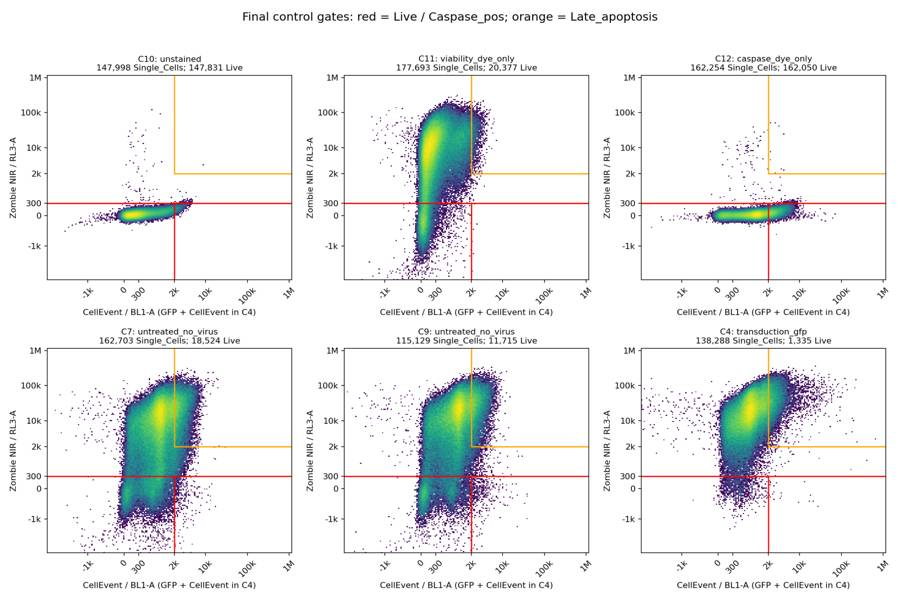
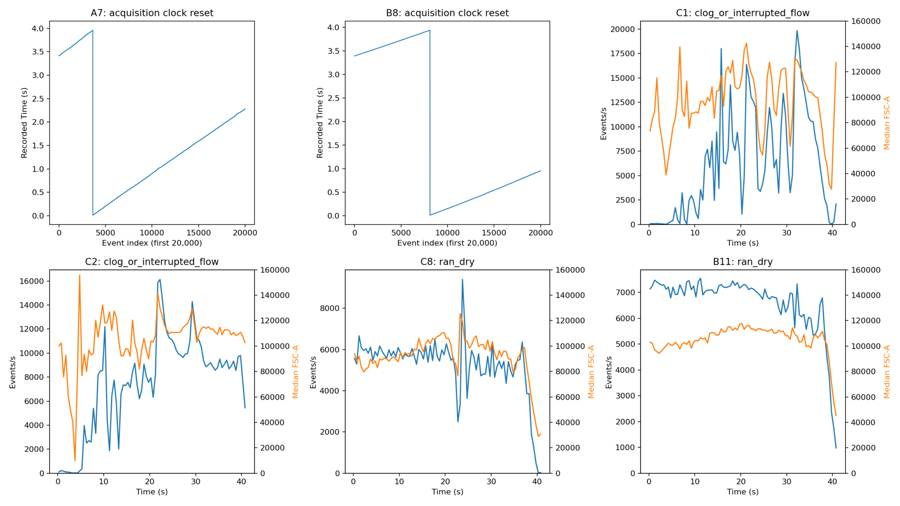
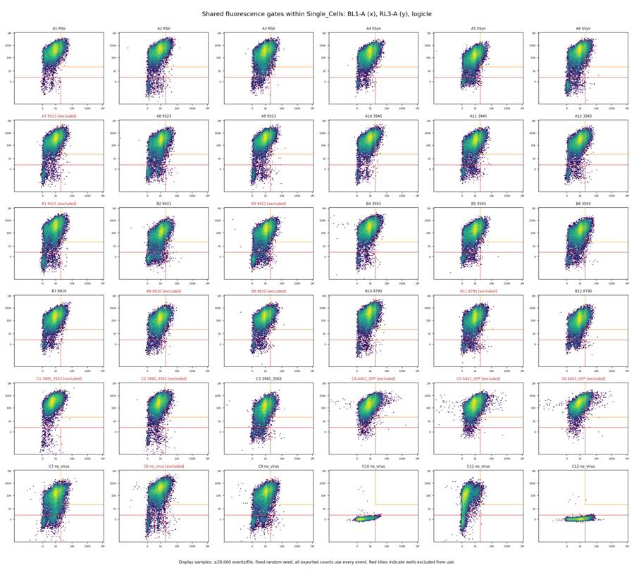
{"chunk_id":"594a7f","wall_time_seconds":0.000003882,"exit_code":0,"original_token_count":8,"output":"Saved final gate and QC plots.\n"}32
agent
The review flags 12 wells: four for acquisition interruptions, seven for terminal flow collapse, and C4 for GFP/CellEvent confounding. C5 and C6 have both flow failure and GFP confounding. The other 24 pass the documented criteria. Final plots, per-well evidence, and gate-placement notes are saved; I’m checking the deliverable formats and totals now.
tool call · exec
text(await tools.exec_command({cmd:"cat > /task/outputs/validate_outputs.py <<'PY'\nfrom pathlib import Path\nimport numpy as np,pandas as pd,flowkit as fk\nfrom lxml import etree\nO=Path(__file__).resolve().parent\nlayout=pd.read_csv('/task/inputs/plate_layout.csv',keep_default_na=False)\nc=pd.read_csv(O/'counts.csv');f=pd.read_csv(O/'flags.csv');q=pd.read_csv(O/'gated_qc_metrics.csv').set_index('well')\nassert list(c.columns)==['file','well','population','count','parent_population','pct_of_parent']\nassert list(f.columns)==['file','well','usable','reason_category','evidence']\nassert len(c)==180 and len(f)==36\nassert not c.isna().any().any() and not f.isna().any().any()\nassert set(c.file)==set(f.file)==set(layout.file)\nassert (f.usable.eq('yes')==f.reason_category.eq('ok')).all()\nassert set(f.reason_category)<={'ok','clog_or_interrupted_flow','ran_dry','too_few_events','saturation','bad_control','mislabeled_or_unexpected','other'}\nassert set(f.usable)<={'yes','no'}\nassert not f.file.duplicated().any() and not c.duplicated(['file','population']).any()\nassert np.issubdtype(c['count'].dtype,np.integer)\npops=['Cells','Single_Cells','Live','Caspase_pos','Late_apoptosis'];parents=['All_events','Cells','Single_Cells','Live','Single_Cells']\nfor r in layout.itertuples():\n d=c[c.file==r.file]\n assert list(d.population)==pops and list(d.parent_population)==parents\n assert list(d.well)==[r.well]*5\n assert f[f.file==r.file].well.iloc[0]==r.well\n for x in d.itertuples():\n parent=int(q.loc[r.well,x.parent_population]);expected=100*x.count/parent if parent else 0.\n assert x.count==q.loc[r.well,x.population]\n assert np.isclose(x.pct_of_parent,expected,atol=1e-12,rtol=1e-12)\n assert 0<=x.count<=parent and 0<=x.pct_of_parent<=100\ns=fk.parse_gating_xml(str(O/'gates.xml'))\npaths=[('root',),('root','Cells'),('root','Cells','Single_Cells'),('root','Cells','Single_Cells','Live'),('root','Cells','Single_Cells')]\nclasses=[fk.gates.PolygonGate,fk.gates.PolygonGate,fk.gates.RectangleGate,fk.gates.RectangleGate,fk.gates.PolygonGate]\nchannels=[['FSC-A','SSC-A'],['SSC-H','SSC-A'],['BL1-A','RL3-A'],['BL1-A','RL3-A'],['BL1-A','RL3-A']]\nassert set(s.get_gate_ids())==set(zip(pops,paths))\nfor name,path,cls,ch in zip(pops,paths,classes,channels):\n g=s.get_gate(name,path);assert isinstance(g,cls)\n assert [d.id for d in g.dimensions]==ch\n assert all(d.compensation_ref=='uncompensated' for d in g.dimensions)\n assert all(d.transformation_ref==('fluorescence_logicle' if d.id in ['BL1-A','RL3-A'] else None) for d in g.dimensions)\nxml=etree.parse(str(O/'gates.xml'))\nassert len(xml.xpath('//*[local-name()=\"PolygonGate\" or local-name()=\"RectangleGate\"]'))==5\nassert not xml.xpath('//*[local-name()=\"spectrumMatrix\"]')\nassert len((O/'notes.md').read_text().split())<500\nwith open(O/'validation.txt','a') as h:\n h.write('PASS: Final CSV schemas, exact filename/well mapping, row uniqueness, integer counts, order and independently recomputed parent percentages.\\n')\n h.write('PASS: Exactly five permitted gate types, required detector IDs and hierarchy, all dimensions uncompensated, fluorescence-only logicle, no compensation matrix.\\n')\n h.write(f'PASS: 36 flags ({sum(f.usable==\"yes\")} usable, {sum(f.usable==\"no\")} excluded); categories and usability consistent; notes under 500 words.\\n')\nprint((O/'validation.txt').read_text())\nPY\npython /task/outputs/validate_outputs.py","yield_time_ms":1000,"max_output_tokens":2000}));
tool output
Script completed
Wall time 1.2 seconds
Output:
{"chunk_id":"42f14f","wall_time_seconds":1.000787695,"session_id":50401,"original_token_count":193,"output":"FlowKit 1.2.3\nPASS: GatingML export and parse, five gates, 36 complete files, 180 integer counts.\nPASS: Exported and in-memory gate membership identical for all 180 populations.\nPASS: Parent membership, population order, exact input filenames, well/channel metadata and percentage ranges.\nNo compensation, autofluorescence correction, per-well gates or time trimming.\nPASS: Final CSV schemas, exact filename/well mapping, row uniqueness, integer counts, order and independently recomputed parent percentages.\nPASS: Exactly five permitted gate types, required detector IDs and hierarchy, all dimensions uncompensated, fluorescence-only logicle, no compensation matrix.\nPASS: 36 flags (24 usable, 12 excluded); categories and usability consistent; notes under 500 words.\n\n"}tool call · exec
const rs=await Promise.allSettled([tools.view_image({path:"/task/outputs/final_cells.png"}),tools.view_image({path:"/task/outputs/final_singlets.png"})]);for(const r of rs)if(r.status==="fulfilled")image(r.value.image_url);else text(r);
text(await tools.write_stdin({session_id:50401,chars:"","yield_time_ms":1000,"max_output_tokens":500}));
tool output
Script completed Wall time 0.1 seconds Output:
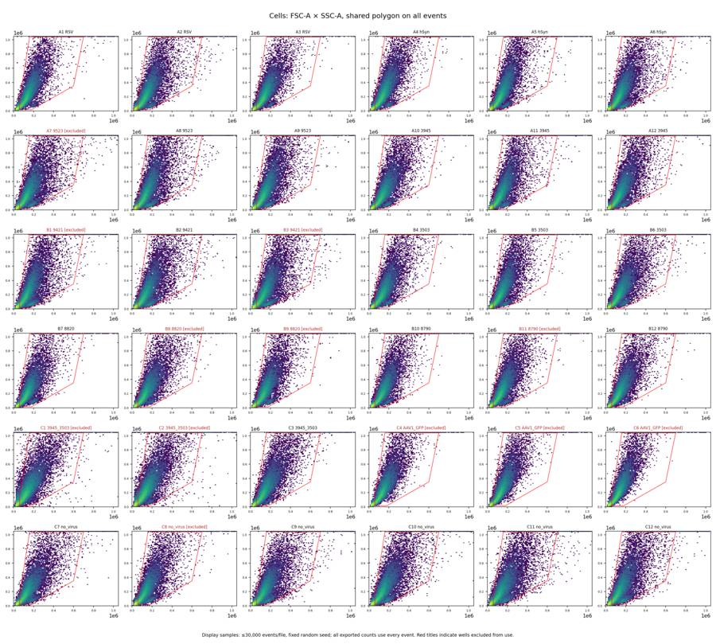
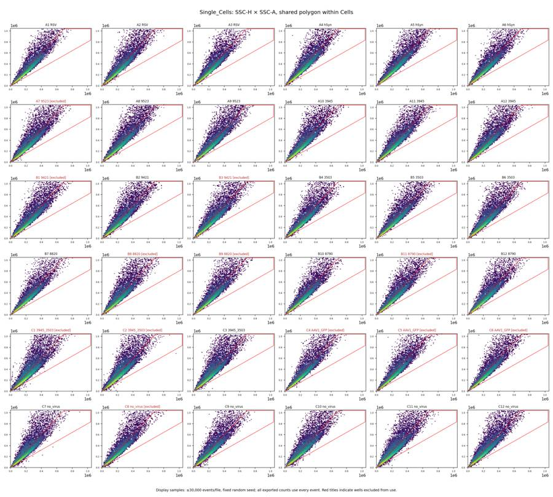
{"chunk_id":"68fb99","wall_time_seconds":0.000003965,"exit_code":0,"original_token_count":0,"output":""}34
agent
Saved all deliverables:
- [gates.xml](/task/outputs/gates.xml)
- [counts.csv](/task/outputs/counts.csv) — 180 rows
- [flags.csv](/task/outputs/flags.csv) — 36 wells with quantified evidence
- [notes.md](/task/outputs/notes.md)
Validated XML reload and identical gate memberships across all wells.
**24 wells pass; 12 are excluded:** A7, B1, B3, B8, B9, B11, C1, C2, C4–C6, C8.
Caspase thresholds are conservative because controls overlap. GFP wells cannot support caspase-specific interpretation.